3 확률변수와 그 분포
이 장에서는 표기를 단순화하고 불확실성을 정량화하며 실험 결과를 요약하는 능력을 넓혀 주는 대단히 유용한 개념인 확률변수를 소개한다. 확률변수는 이 책의 나머지 부분과 통계학 전반에 걸쳐 필수적이므로 그 의미를 직관적으로나 수학적으로나 깊이 생각하는 것이 매우 중요하다.
3.1 확률변수
지금까지 사용한 표기가 왜 금방 다루기 어려워지는지 알아보기 위해 2장의 도박사의 파산 문제를 다시 생각해 보자. 이 문제에서는 각 도박사가 특정 시점에 얼마만큼의 재산을 갖고 있는지에 큰 관심이 있을 수 있다. 따라서 모든 \(j,k\)에 대해, \(k\)라운드 후 도박사 A가 정확히 \(j\)달러를 가진 사건을 \(A_{jk}\)로 나타내고 도박사 B에 대해서도 마찬가지로 사건 \(B_{jk}\)를 정의하는 식으로 표기를 만들 수 있다.
하지만 이것만으로도 이미 지나치게 복잡하다. 게다가 \(k\)라운드 후 두 사람의 재산 차이(도박사 A의 재산에서 도박사 B의 재산을 뺀 값)나 게임의 지속 시간(한 선수가 파산할 때까지의 라운드 수)과 같은 다른 양에도 관심이 있을 수 있다. “게임의 지속 시간이 \(r\)라운드이다”라는 사건을 \(A_{jk}\)와 \(B_{jk}\)로 표현하려면 합집합과 교집합을 길고 어색하게 늘어놓아야 한다. 그뿐인가? 도박사 A의 재산을 달러가 아닌 그에 상응하는 유로 금액으로 표현하고 싶다면 어떻게 해야 할까? 달러 금액에는 환율을 곱할 수 있지만, 사건에는 환율을 곱할 수 없다.
관심 있는 양들 사이의 관계를 알아보기 어렵게 만드는 복잡한 표기 대신 다음과 같이 말할 수 있다면 좋지 않을까?
\(X_k\)를 \(k\)라운드 후 도박사 A의 재산이라 하자. 그러면 \(Y_k=N-X_k\)는 \(k\)라운드 후 도박사 B의 재산이다. 여기서 \(N\)은 고정된 총재산이다. \(X_k-Y_k=2X_k-N\)은 \(k\)라운드 후 두 사람의 재산 차이이며, \(c_kX_k\)는 \(k\)라운드 후 도박사 A의 재산을 유로로 나타낸 것이다. 여기서 \(c_k\)는 \(k\)라운드 후 1달러당 유로 환율이다. 게임의 지속 시간은 \(R=\min\{n:X_n=0\text{ 또는 }Y_n=0\}\)이다.
확률변수라는 개념을 사용하면 정확히 이렇게 할 수 있다! 하지만 개념적으로나 기술적으로나 올바르게 만들기 위해서는 주의 깊게 도입해야 한다. 때로 “확률변수란 무작위 값을 취하는 변수이다”라는 말을 거의 그대로 바꾸어 쓴 정의를 볼 수 있지만, 그런 빈약한 정의로는 무작위성이 어디에서 오는지 설명하지 못한다. 또한 확률변수의 성질을 유도하는 데도 도움이 되지 않는다. 우리는 \(x^2+y^2=1\)과 같은 대수방정식을 다루는 데 익숙하지만, \(x\)와 \(y\)가 확률변수라면 어떤 수학적 연산이 유효한가? 확률변수의 개념을 정확히 하기 위해 이를 표본공간에서 실수선으로 대응시키는 함수로 정의한다. 함수에 관한 몇 가지 개념은 수학 부록에서 복습할 수 있다.
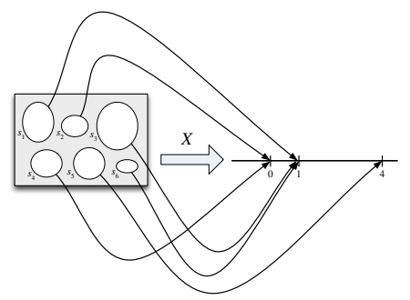
정의 3.1.1 (확률변수). 표본공간이 \(S\)인 실험이 주어졌을 때, 확률변수(random variable, r.v.)는 표본공간 \(S\)에서 실수 \(\mathbb{R}\)로 가는 함수이다. 확률변수를 대문자로 나타내는 경우가 많지만 반드시 그래야 하는 것은 아니다.
따라서 확률변수 \(X\)는 실험의 가능한 결과 \(s\) 각각에 수치 \(X(s)\)를 부여한다. 무작위성은 무작위 실험이 있다는 사실에서 비롯된다. 이때 확률은 확률함수 \(P\)로 기술된다. 그림 3.1처럼 대응 자체는 결정론적이다. 같은 확률변수를 조약돌 안에 값을 써 넣어 더 간단하게 나타낸 것이 그림 3.2의 왼쪽 그림이다.
이 정의는 추상적이지만 근본적이다. 확률과 통계를 공부하면서 길러야 할 가장 중요한 능력 중 하나는 추상적인 아이디어와 구체적인 예 사이를 오가는 능력이다. 이와 관련해, 문제의 본질적인 패턴이나 구조를 알아보고 그것이 이전에 공부한 문제들과 어떻게 연결되는지 파악하는 연습도 중요하다. 동전 던지기나 항아리에서 공 꺼내기에 관한 이야기를 자주 다루는 이유는 그것들이 다루기 간단하고 편리한 상황이기 때문이다. 그러나 다른 많은 문제들은 동형이다. 겉모습은 다르지만 본질적인 구조가 같다는 뜻이다.
먼저 동전 던지기 예를 생각해 보자. 이 문제의 구조는 각 시행에 가능한 결과가 두 가지인 시행의 열이 있다는 것이다. 여기서는 가능한 결과를 H(앞면)와 T(뒷면)로 생각하지만, 예를 들어 “성공”과 “실패” 또는 1과 0으로 생각해도 마찬가지이다.
예제 3.1.2 (동전 던지기). 공정한 동전을 두 번 던지는 실험을 생각하자. 표본공간은 가능한 결과 네 개로 이루어진다. 즉 \(S=\{HH,HT,TH,TT\}\)이다. 이 공간 위의 확률변수 몇 가지는 다음과 같다. 연습 삼아 직접 다른 확률변수도 생각해 볼 수 있다. 각각의 확률변수는 실험의 어떤 측면을 수치로 요약한다.
\(X\)를 앞면이 나온 횟수라 하자. 이는 가능한 값이 0, 1, 2인 확률변수이다. 함수로 보면 \(X\)는 결과 \(HH\)에 값 2를, 결과 \(HT\)와 \(TH\)에 값 1을, 결과 \(TT\)에 값 0을 부여한다. 즉
\[X(HH)=2,\qquad X(HT)=X(TH)=1,\qquad X(TT)=0.\]
\(Y\)를 뒷면이 나온 횟수라 하자. \(X\)를 이용하면 \(Y=2-X\)이다. 다시 말해 \(Y\)와 \(2-X\)는 같은 확률변수이다. 모든 \(s\)에 대해 \(Y(s)=2-X(s)\)이기 때문이다.
첫 번째 던지기에서 앞면이 나오면 \(I\)를 1로, 그렇지 않으면 0으로 정하자. 그러면 \(I\)는 결과 \(HH\)와 \(HT\)에 값 1을, 결과 \(TH\)와 \(TT\)에 값 0을 부여한다. 이 확률변수는 첫 번째 던지기에서 앞면이 나왔는지를 1은 “예”, 0은 “아니요”라는 뜻으로 표시하므로 지시확률변수라고 하는 것의 한 예이다.
또한 앞면을 1로, 뒷면을 0으로 부호화하여 표본공간을 \(\{(1,1),(1,0),(0,1),(0,0)\}\)으로 나타낼 수도 있다. 그러면 \(X,Y,I\)를 다음과 같은 명시적인 공식으로 쓸 수 있다.
\[ X(s_1,s_2)=s_1+s_2,\qquad Y(s_1,s_2)=2-s_1-s_2,\qquad I(s_1,s_2)=s_1. \]
여기서 간단히 쓰기 위해 \(X((s_1,s_2))\)를 \(X(s_1,s_2)\)로 나타내는 식의 표기를 사용했다.
앞으로 다룰 대부분의 확률변수에 대해 이런 식으로 명시적인 공식을 쓰는 일은 번거롭거나 불가능하다. 다행히 대개 그럴 필요가 없다. 이 예에서 보았듯이 확률변수를 정의하는 다른 방법이 있고, 이 책의 나머지 부분에서 계속 보게 되듯이 각 결과 \(s\)를 어디에 대응시키는지 명시적으로 나타낸 공식으로 계산하는 것 외에도 확률변수의 성질을 연구하는 방법은 많기 때문이다. \(\square\)
앞의 장에서와 같이 결과가 유한개인 표본공간에서는 결과를 조약돌로 시각화할 수 있다. 이때 각 조약돌의 질량은 그 결과의 확률에 해당하며 조약돌 전체의 질량은 1이다. 확률변수는 각 조약돌에 숫자를 하나씩 붙일 뿐이다. 그림 3.2는 같은 표본공간 위에 정의된 두 확률변수를 보여 준다. 조약돌, 즉 결과는 같지만 그 결과에 부여되는 실수는 다르다.
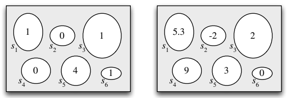
앞에서 언급했듯이 확률변수의 무작위성의 원천은 실험 자체이다. 실험에서는 확률함수 \(P\)에 따라 표본 결과 \(s\in S\)가 선택된다. 실험을 수행하기 전에는 결과 \(s\)가 아직 실현되지 않았으므로 \(X\)가 어떤 값을 가질지 알 수 없다. 물론 \(X\)가 주어진 값이나 값의 범위를 취할 확률은 계산할 수 있다. 실험을 수행하여 결과 \(s\)가 실현되고 나면 확률변수는 수치 \(X(s)\)로 결정된다.
확률변수는 해당 실험을 수치로 요약해 준다. 실험의 표본공간은 종종 믿기 어려울 만큼 복잡하거나 고차원이고, 결과 \(s\in S\)는 수치가 아닐 수도 있으므로 이는 매우 편리하다. 예를 들어 어떤 도시에서 사람들을 무작위로 표본추출해 여러 질문을 하는 실험일 수 있는데, 답은 나이나 키처럼 수치일 수도 있고 정당이나 가장 좋아하는 영화처럼 수치가 아닐 수도 있다. 확률변수가 수치 값을 취한다는 사실은 항상 \(S\)의 복잡성 전체를 다루어야 하는 것과 비교하면 매우 편리한 단순화이다.
3.2 분포와 확률질량함수
실제로 사용되는 확률변수에는 두 가지 주요 유형이 있다. 이산확률변수와 연속확률변수이다. 이 장과 다음 장에서는 이산확률변수에 초점을 맞춘다. 연속확률변수는 5장에서 소개한다.
정의 3.2.1 (이산확률변수). 확률변수 \(X\)에 대해 유한한 값의 목록 \(a_1,a_2,\ldots,a_n\) 또는 무한한 값의 목록 \(a_1,a_2,\ldots\)이 존재하여 \(P(X=a_j\text{인 }j\text{가 존재한다})=1\)이면 \(X\)를 이산확률변수라고 한다. \(X\)가 이산확률변수일 때 \(P(X=x)>0\)인 값 \(x\)들의 유한 또는 가산무한 집합을 \(X\)의 지지집합이라고 한다.
응용에서는 이산확률변수의 지지집합이 정수들의 집합인 경우가 가장 흔하다. 반면 연속확률변수는 어떤 구간의 임의의 실수 값을 취할 수 있으며 그 구간이 실수 전체일 수도 있다. 이런 확률변수는 5장에서 더 정확하게 정의한다. 이산과 연속이 혼합된 확률변수도 가능하다. 예를 들어 동전을 던져 앞면이 나오면 이산확률변수를 생성하고 뒷면이 나오면 연속확률변수를 생성할 수 있다. 그러나 이러한 확률변수를 이해하기 위한 출발점은 이산확률변수와 연속확률변수를 이해하는 것이다.
확률변수가 주어지면 그 거동을 확률의 언어로 기술할 수 있기를 원한다. 예를 들어 확률변수가 주어진 범위에 들어갈 확률에 관한 질문에 답하고 싶을 수 있다. \(L\)이 무작위로 선택한 미국 대학 졸업자의 평생 소득이라면 \(L\)이 백만 달러를 넘을 확률은 얼마인가? \(M\)이 앞으로 5년 동안 캘리포니아에서 발생할 큰 지진의 횟수라면 \(M\)이 0일 확률은 얼마인가?
확률변수의 분포는 이러한 질문에 답을 제공한다. 분포는 확률변수가 3과 같을 확률이나 110 이상일 확률처럼 그 확률변수와 관련된 모든 사건의 확률을 지정한다. 앞으로 확률변수의 분포를 표현하는 동등한 방법이 여럿 있음을 볼 것이다. 이산확률변수에 대해서는 확률질량함수가 가장 자연스러운 표현 방법이며, 이제 이를 정의한다.
정의 3.2.2 (확률질량함수). 이산확률변수 \(X\)의 확률질량함수(probability mass function, PMF)는 \(p_X(x)=P(X=x)\)로 주어지는 함수 \(p_X\)이다. \(x\)가 \(X\)의 지지집합에 속하면 이 값은 양수이고, 그렇지 않으면 0이다.
주의 3.2.3. \(P(X=x)\)라고 쓸 때 \(X=x\)는 \(X\)가 숫자 \(x\)를 부여하는 모든 결과 \(s\)로 이루어진 사건을 나타낸다. 이 사건은 \(\{X=x\}\)로도 쓴다. 형식적으로 \(\{X=x\}\)는 \(\{s\in S:X(s)=x\}\)로 정의되지만, \(\{X=x\}\)가 더 짧고 직관적이다. 예제 3.1.2로 돌아가서 \(X\)가 공정한 동전을 두 번 던져 앞면이 나온 횟수라면 \(\{X=1\}\)은 표본 결과 \(HT\)와 \(TH\)로 이루어진다. 이 두 결과에 \(X\)가 1을 부여하기 때문이다. \(\{HT,TH\}\)는 표본공간의 부분집합이므로 사건이다. 따라서 \(P(X=1)\) 또는 더 일반적으로 \(P(X=x)\)를 말하는 것은 타당하다. \(\{X=x\}\)가 사건이 아닌 다른 것이었다면 그 확률을 계산하는 것은 의미가 없었을 것이다! “\(P(X)\)”라고 쓰는 것은 의미가 없다. 확률변수 자체가 아니라 사건의 확률만 구할 수 있기 때문이다.
확률질량함수의 예를 몇 가지 살펴보자.
예제 3.2.4 (동전 던지기, 계속). 이 예에서는 공정한 동전을 두 번 던지는 예제 3.1.2에 나온 모든 확률변수의 확률질량함수를 구한다. 우리가 정의한 확률변수와 각각의 확률질량함수는 다음과 같다.
\(X\): 앞면이 나온 횟수. \(TT\)가 발생하면 \(X=0\), \(HT\) 또는 \(TH\)가 발생하면 \(X=1\), \(HH\)가 발생하면 \(X=2\)이므로 \(X\)의 확률질량함수 \(p_X\)는 다음과 같다.
\[ \begin{aligned} p_X(0)&=P(X=0)=1/4,\\ p_X(1)&=P(X=1)=1/2,\\ p_X(2)&=P(X=2)=1/4, \end{aligned} \]
그 밖의 모든 \(x\)에 대해 \(p_X(x)=0\)이다.
\(Y=2-X\): 뒷면이 나온 횟수. 위와 같이 추론하거나
\[P(Y=y)=P(2-X=y)=P(X=2-y)=p_X(2-y)\]
라는 사실을 이용하면 \(Y\)의 확률질량함수는
\[ \begin{aligned} p_Y(0)&=P(Y=0)=1/4,\\ p_Y(1)&=P(Y=1)=1/2,\\ p_Y(2)&=P(Y=2)=1/4, \end{aligned} \]
이고 그 밖의 모든 \(y\)에 대해 \(p_Y(y)=0\)이다. \(X\)와 \(Y\)는 같은 확률변수가 아닌데도 같은 확률질량함수를 갖는다는 점에 주목하자. 즉 \(p_X\)와 \(p_Y\)는 같은 함수이지만, \(X\)와 \(Y\)는 \(\{HH,HT,TH,TT\}\)에서 실수선으로 가는 서로 다른 두 함수이다.
\(I\): 첫 번째 던지기에서 앞면이 나오는 사건의 지시확률변수. \(TH\) 또는 \(TT\)가 발생하면 \(I=0\)이고 \(HH\) 또는 \(HT\)가 발생하면 \(I=1\)이므로 \(I\)의 확률질량함수는
\[p_I(0)=P(I=0)=1/2,\qquad p_I(1)=P(I=1)=1/2,\]
이고 그 밖의 모든 \(i\)에 대해 \(p_I(i)=0\)이다.
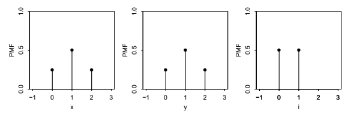
\(X,Y,I\)의 확률질량함수를 그림 3.3에 나타냈다. 서로 다른 점들의 높이를 비교하기 쉽도록 수직 막대를 그렸다. \(\square\)
예제 3.2.5 (주사위를 던져 얻은 눈의 합). 공정한 6면체 주사위 두 개를 던진다. 각각의 눈을 \(X,Y\)라 하고 두 눈의 합을 \(T=X+Y\)라 하자. 이 실험의 표본공간에는 같은 가능성을 갖는 결과가 36개 있다.
\[S=\{(1,1),(1,2),\ldots,(6,5),(6,6)\}.\]
예를 들어 이 36개 결과 중 7개를 다음 표에 대응하는 \(X,Y,T\)의 값과 함께 나타냈다. 실험을 수행한 후 \(X\)와 \(Y\)의 값을 관찰하며, 그때 관찰된 \(T\)의 값은 두 값의 합이다.
| \(s\) | \(X\) | \(Y\) | \(X+Y\) |
|---|---|---|---|
| \((1,2)\) | 1 | 2 | 3 |
| \((1,6)\) | 1 | 6 | 7 |
| \((2,5)\) | 2 | 5 | 7 |
| \((3,1)\) | 3 | 1 | 4 |
| \((4,3)\) | 4 | 3 | 7 |
| \((5,4)\) | 5 | 4 | 9 |
| \((6,6)\) | 6 | 6 | 12 |
주사위가 공정하므로 \(X\)의 확률질량함수는 \(j=1,2,\ldots,6\)에 대해 \(P(X=j)=1/6\)이고 그 밖의 경우에는 \(P(X=j)=0\)이다. 이때 \(X\)가 \(1,2,\ldots,6\) 위의 이산균등분포를 따른다고 말한다. 마찬가지로 \(Y\)도 \(1,2,\ldots,6\) 위의 이산균등분포를 따른다. \(Y\)와 \(X\)는 분포는 같지만 같은 확률변수는 아니다. 실제로
\[P(X=Y)=6/36=1/6.\]
이 실험에서 \(X\)와 분포가 같은 확률변수로 \(7-X\)와 \(7-Y\)가 더 있다. 이를 알기 위해 표준 주사위에서 \(X\)가 윗면의 눈이라면 \(7-X\)는 아랫면의 눈이라는 사실을 이용할 수 있다. 윗면의 눈이 \(1,2,\ldots,6\) 중 어느 수일 가능성도 같다면 아랫면의 눈도 마찬가지이다. \(7-X\)와 \(X\)는 분포가 같지만 실험을 한 번 수행할 때 그 값이 서로 같아지는 일은 결코 없다!
이제 \(T\)의 확률질량함수를 구해 보자. 확률의 고전적 정의에 따라
\[ \begin{aligned} P(T=2)&=P(T=12)=1/36,\\ P(T=3)&=P(T=11)=2/36,\\ P(T=4)&=P(T=10)=3/36,\\ P(T=5)&=P(T=9)=4/36,\\ P(T=6)&=P(T=8)=5/36,\\ P(T=7)&=6/36. \end{aligned} \]
그 밖의 모든 \(t\)에 대해 \(P(T=t)=0\)이다. 주사위 두 개에서 가능한 눈의 합을 보면 \(T\)의 지지집합이 \(\{2,3,\ldots,12\}\)임을 바로 알 수 있다. 확인을 위해 다음 식을 살펴보자.
\[P(T=2)+P(T=3)+\cdots+P(T=12)=1.\]
이는 모든 가능성을 빠짐없이 고려했음을 보여 준다. 위에서 나타난 \(T\)의 대칭성 \(P(T=t)=P(T=14-t)\)도 타당하다. \(T=t\)를 만드는 각 결과 \(\{X=x,Y=y\}\)에 대응하여, 같은 확률을 가지면서 \(T=14-t\)를 만드는 결과 \(\{X=7-x,Y=7-y\}\)가 있기 때문이다.
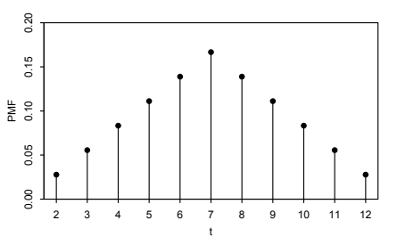
그림 3.4에 \(T\)의 확률질량함수를 나타냈다. 삼각형 모양이며 위에서 언급한 대칭성이 뚜렷하게 보인다. \(\square\)
예제 3.2.6 (미국 가구의 자녀 수). 미국에서 가구 하나를 무작위로 선택한다고 하자. 선택된 가구의 자녀 수를 \(X\)라 하자. \(X\)는 정수 값만 취할 수 있으므로 이산확률변수이다. \(X\)가 값 \(x\)를 취할 확률은 미국에서 자녀가 \(x\)명인 가구의 수에 비례한다.
2010년 일반사회조사(General Social Survey) 자료 [23]를 이용하면 자녀가 0명, 1명, 2명 등인 가구의 비율을 근사할 수 있고, 따라서 그림 3.5에 나타낸 \(X\)의 확률질량함수도 근사할 수 있다. \(\square\)
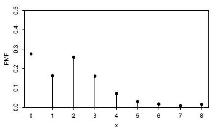
이제 유효한 확률질량함수의 성질을 서술하자.
정리 3.2.7 (유효한 확률질량함수). \(X\)를 지지집합이 \(x_1,x_2,\ldots\)인 이산확률변수라 하자. 이 값들은 서로 다르고, 표기를 간단히 하기 위해 지지집합이 가산무한이라고 가정한다. 지지집합이 유한한 경우에도 유사한 결과가 성립한다. \(X\)의 확률질량함수 \(p_X\)는 다음 두 조건을 만족해야 한다.
- 음이 아님: 어떤 \(j\)에 대해 \(x=x_j\)이면 \(p_X(x)>0\)이고, 그렇지 않으면 \(p_X(x)=0\)이다.
- 합이 1임: \(\sum_{j=1}^{\infty}p_X(x_j)=1\)이다.
증명. 첫 번째 조건은 확률이 음이 아니므로 참이다.1 두 번째 조건은 \(X\)가 반드시 어떤 값을 취해야 하고 사건들 \(\{X=x_j\}\)가 서로 배반이므로 참이다. 즉
\[ \sum_{j=1}^{\infty}P(X=x_j) =P\!\left(\bigcup_{j=1}^{\infty}\{X=x_j\}\right) =P(X=x_1\text{ 또는 }X=x_2\text{ 또는 }\cdots)=1. \]
\(\blacksquare\)
반대로 서로 다른 값 \(x_1,x_2,\ldots\)이 지정되어 있고 위 두 조건을 만족하는 함수가 있다면, 이 함수는 어떤 확률변수의 확률질량함수이다. 그러한 확률변수를 구성하는 방법은 5장에서 보일 것이다.
앞에서 확률질량함수가 이산확률변수의 분포를 표현하는 한 가지 방법이라고 했다. 이는 다음 예에서 보듯 \(X\)의 확률질량함수를 알고 나면 적절한 \(x\) 값들에 대해 합하여 \(X\)가 실수의 주어진 부분집합에 들어갈 확률을 계산할 수 있기 때문이다.
예제 3.2.8. 예제 3.2.5로 돌아가 \(T\)를 공정한 주사위 두 개를 던져 얻은 눈의 합이라 하자. 우리는 이미 \(T\)의 확률질량함수를 계산했다. 이제 \(T\)가 구간 \([1,4]\)에 들어갈 확률에 관심이 있다고 하자. \(T\)가 취할 수 있는 값 가운데 구간 \([1,4]\)에 속하는 것은 2, 3, 4 세 개뿐이다. 이들 각각의 확률은 \(T\)의 확률질량함수에서 알 수 있으므로
\[P(1\le T\le4)=P(T=2)+P(T=3)+P(T=4)=6/36.\]
\(\square\)
일반적으로 이산확률변수 \(X\)와 실수의 집합 \(B\)가 주어졌을 때 \(X\)의 확률질량함수를 안다면, \(X\)가 \(B\)에 속할 확률 \(P(X\in B)\)를 확률질량함수 그래프에서 \(B\)에 속하는 점들의 수직 막대 높이를 더해 구할 수 있다. 이산확률변수의 확률질량함수를 알면 그 분포가 결정된다.
3.3 베르누이 분포와 이항분포
확률과 통계에서 너무나 자주 등장하여 고유한 이름을 가진 분포들이 있다. 이 책에서는 이러한 이름 붙은 분포들을 계속 소개할 것이다. 먼저 매우 단순하지만 유용한 경우, 즉 가능한 값이 0과 1 두 개뿐인 확률변수부터 시작하자.
정의 3.3.1 (베르누이 분포). 확률변수 \(X\)가 \(P(X=1)=p\), \(P(X=0)=1-p\)를 만족하면, 여기서 \(0<p<1\)일 때 \(X\)가 모수 \(p\)인 베르누이 분포를 따른다고 한다. 이를 \(X\sim\operatorname{Bern}(p)\)로 쓴다. 기호 \(\sim\)은 ‘분포를 따른다’라고 읽는다.
가능한 값이 0과 1인 모든 확률변수는 \(\operatorname{Bern}(p)\) 분포를 따르며, 이때 \(p\)는 그 확률변수가 1이 될 확률이다. \(\operatorname{Bern}(p)\)의 이 수 \(p\)를 분포의 모수라고 한다. 모수는 구체적으로 어떤 베르누이 분포인지 결정한다. 따라서 베르누이 분포가 하나만 있는 것이 아니라, \(p\)에 따라 구별되는 베르누이 분포의 한 계열이 있다. 예를 들어 \(X\sim\operatorname{Bern}(1/3)\)이라면 “\(X\)는 베르누이 분포를 따른다”라고 말하는 것은 맞지만 불완전하다. \(X\)의 분포를 완전히 지정하려면 이름인 베르누이와 모숫값인 \(1/3\)을 모두 말해야 한다. 이것이 \(X\sim\operatorname{Bern}(1/3)\)이라는 표기의 취지이다.
모든 사건에는 그 사건이 발생하면 1, 그렇지 않으면 0인, 자연스럽게 대응하는 베르누이 확률변수가 있다. 이를 사건의 지시확률변수라고 한다. 이러한 확률변수가 매우 유용함을 앞으로 볼 것이다.
정의 3.3.2 (지시확률변수). 사건 \(A\)의 지시확률변수는 \(A\)가 발생하면 1, 그렇지 않으면 0인 확률변수이다. \(A\)의 지시확률변수는 \(I_A\) 또는 \(I(A)\)로 나타낸다. \(p=P(A)\)일 때 \(I_A\sim\operatorname{Bern}(p)\)임에 유의하자.2
베르누이 확률변수를 동전 던지기로 상상하는 경우가 많지만, 이는 다음의 일반적인 이야기를 다루기 위한 편리한 표현일 뿐이다.
이야기 3.3.3 (베르누이 시행). ‘성공’ 또는 ‘실패’ 중 하나의 결과를 낼 수 있지만 두 결과가 동시에 나타나지는 않는 실험을 베르누이 시행이라 한다. 베르누이 확률변수는 베르누이 시행에서 성공을 나타내는 지시확률변수로 생각할 수 있다. 즉 시행에서 성공하면 1이고 실패하면 0이다. \(\square\)
이 이야기 때문에 \(\operatorname{Bern}(p)\) 분포의 모수 \(p\)를 흔히 성공 확률이라 한다. 베르누이 시행을 생각하기 시작하면 시행이 여러 번 있을 때 무슨 일이 일어나는지도 생각하지 않을 수 없다.
이야기 3.3.4 (이항분포). 서로 독립인 베르누이 시행 \(n\)번을 수행하며 각 시행의 성공 확률이 모두 \(p\)로 같다고 하자. 성공 횟수를 \(X\)라 하자. \(X\)의 분포를 모수가 \(n\)과 \(p\)인 이항분포라 한다. \(X\sim\operatorname{Bin}(n,p)\)는 \(X\)가 모수 \(n\)과 \(p\)인 이항분포를 따른다는 뜻이며, \(n\)은 양의 정수이고 \(0<p<1\)이다. \(\square\)
여기서 이항분포를 확률질량함수로 정의하지 않고 이항분포를 따르는 확률변수를 만들어 낼 수 있는 실험의 종류에 관한 이야기로 정의했다는 점에 주목하자. 통계학에서 가장 유명한 분포들은 모두 이야기를 가지고 있으며, 그 이야기는 왜 이 분포들이 데이터의 모형이나 더 복잡한 분포를 구성하는 기본 요소로 그토록 자주 사용되는지 설명한다.
이름 붙은 분포를 무엇보다 먼저 그 이야기를 통해 생각하면 많은 이점이 있다. 패턴 인식이 쉬워져 두 문제가 구조상 본질적으로 같을 때 이를 알아볼 수 있고, 확률질량함수 계산을 완전히 피하는 더 깔끔한 풀이로 이어지는 경우가 많으며, 이름 붙은 분포들이 서로 어떻게 연결되어 있는지도 이해하는 데 도움이 된다. 여기서는 \(\operatorname{Bern}(p)\)가 \(\operatorname{Bin}(1,p)\)와 같은 분포임이 분명하다. 베르누이 분포는 이항분포의 특수한 경우이다.
이항분포의 이야기 정의를 이용해 그 확률질량함수를 구해 보자.
정리 3.3.5 (이항 확률질량함수). \(X\sim\operatorname{Bin}(n,p)\)이면 \(X\)의 확률질량함수는
\[P(X=k)=\binom nk p^k(1-p)^{n-k}\]
이다. 여기서 \(k=0,1,\ldots,n\)이며 그 밖의 경우에는 \(P(X=k)=0\)이다.
주의 3.3.6. 글을 간결하게 쓰기 위해 확률질량함수에서 0이 아닌 값으로 명시하지 않은 곳에서는 그 값이 0이라는 사실을 암묵적으로 두는 경우가 많다. 그러나 어떤 경우든 확률변수의 지지집합이 무엇인지 이해하는 것이 중요하며, 확률질량함수가 유효한지 확인하는 것은 좋은 습관이다. 두 이산확률변수의 확률질량함수가 같으면 지지집합도 같아야 한다. 따라서 이산분포의 지지집합이라고도 말하는데, 이는 그 분포를 따르는 임의의 확률변수의 지지집합이다.
증명. 서로 독립인 베르누이 시행 \(n\)번으로 이루어진 실험은 성공과 실패의 수열을 만들어 낸다. 성공이 \(k\)번, 실패가 \(n-k\)번인 특정 수열 하나가 나올 확률은 \(p^k(1-p)^{n-k}\)이다. 성공이 나타나는 위치만 고르면 되므로 그러한 수열은 \(\binom nk\)개 있다. 따라서 성공 횟수를 \(X\)라 하면
\[P(X=k)=\binom nk p^k(1-p)^{n-k}\]
가 \(k=0,1,\ldots,n\)에 대해 성립하며 그 밖의 경우에는 \(P(X=k)=0\)이다. 이는 음이 아니고 이항정리에 따라 총합이 1이므로 유효한 확률질량함수이다. \(\blacksquare\)
그림 3.6은 여러 \(n\)과 \(p\) 값에 대한 이항 확률질량함수의 그래프를 보여 준다. \(\operatorname{Bin}(10,1/2)\) 분포의 확률질량함수는 5를 중심으로 대칭이지만, 성공 확률이 \(1/2\)이 아니면 확률질량함수가 한쪽으로 치우친다는 점에 주목하자. 시행 횟수 \(n\)이 고정되어 있을 때 성공 확률이 높으면 \(X\)가 더 크고 성공 확률이 낮으면 \(X\)가 더 작은 경향이 있다. 이는 이항분포의 이야기에서 예상할 수 있는 바와 같다. 또한 모든 확률질량함수 그래프에서 세로 막대의 높이를 합하면 1이 되어야 함을 기억하자.
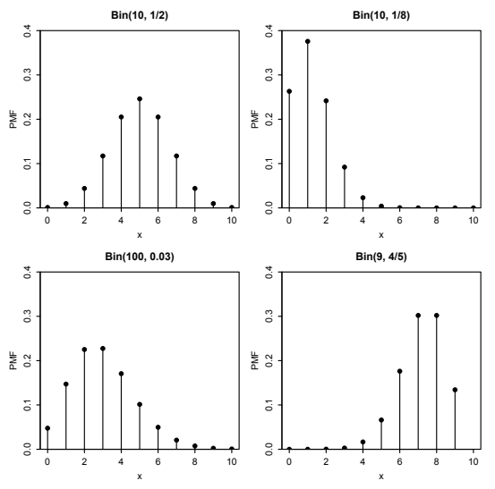
우리는 이야기 3.3.4를 이용해 \(\operatorname{Bin}(n,p)\)의 확률질량함수를 구했다. 이 이야기는 또한 \(X\)가 이항분포를 따르면 \(n-X\)도 이항분포를 따른다는 사실을 간단히 증명할 수 있게 해 준다.
정리 3.3.7. \(X\sim\operatorname{Bin}(n,p)\)이고 \(q=1-p\)라 하자. 우리는 베르누이 시행의 실패 확률을 나타내기 위해 \(q\)를 자주 사용한다. 그러면 \(n-X\sim\operatorname{Bin}(n,q)\)이다.
증명. 이항분포 이야기를 이용하여 \(X\)를 서로 독립인 베르누이 시행 \(n\)번에서의 성공 횟수로 해석하자. 그러면 \(n-X\)는 그 시행들에서의 실패 횟수이다. 성공과 실패의 역할을 서로 바꾸면 \(n-X\sim\operatorname{Bin}(n,q)\)이다.
다른 방법으로 \(n-X\)가 \(\operatorname{Bin}(n,q)\)의 확률질량함수를 갖는지 확인할 수 있다. \(Y=n-X\)라 하자. \(Y\)의 확률질량함수는
\[P(Y=k)=P(X=n-k)=\binom{n}{n-k}p^{n-k}q^k=\binom nk q^kp^{n-k}\]
이며, 여기서 \(k=0,1,\ldots,n\)이다. \(\blacksquare\)
따름정리 3.3.8. \(X\sim\operatorname{Bin}(n,p)\)이고 \(p=1/2\), \(n\)이 짝수라 하자. 그러면 \(X\)의 분포는 \(n/2\)를 중심으로 대칭이다. 즉 모든 음이 아닌 정수 \(j\)에 대해 \(P(X=n/2+j)=P(X=n/2-j)\)이다.
증명. 정리 3.3.7에 따라 \(n-X\)도 \(\operatorname{Bin}(n,1/2)\)를 따르므로 모든 음이 아닌 정수 \(k\)에 대해
\[P(X=k)=P(n-X=k)=P(X=n-k)\]
이다. \(k=n/2+j\)로 놓으면 원하는 결과가 나온다. 이는 그림 3.6에서 \(\operatorname{Bin}(10,1/2)\)의 확률질량함수가 5를 중심으로 대칭인 이유를 설명한다. \(\blacksquare\)
예제 3.3.9 (동전 던지기, 이어서). 예제 3.1.2로 돌아가 보면 이제 \(X\sim\operatorname{Bin}(2,1/2)\), \(Y\sim\operatorname{Bin}(2,1/2)\), \(I\sim\operatorname{Bern}(1/2)\)임을 안다. 정리 3.3.7과 일치하게 \(X\)와 \(Y=2-X\)는 같은 분포를 가지며, 따름정리 3.3.8과 일치하게 \(X\)의 분포와 \(Y\)의 분포는 1을 중심으로 대칭이다. \(\square\)
3.4 초기하분포
흰 공 \(w\)개와 검은 공 \(b\)개가 들어 있는 항아리에서 공 \(n\)개를 복원추출하면, 얻은 흰 공의 개수는 \(\operatorname{Bin}(n,w/(w+b))\) 분포를 따른다. 각 추출은 성공 확률이 \(w/(w+b)\)인 독립 베르누이 시행이기 때문이다. 반대로 그림 3.7처럼 비복원추출하면 흰 공의 개수는 초기하분포를 따른다.
이야기 3.4.1 (초기하분포). 흰 공 \(w\)개와 검은 공 \(b\)개가 들어 있는 항아리를 생각하자. 항아리에서 공 \(n\)개를 무작위로 비복원추출하되, 가능한 \(\binom{w+b}{n}\)개의 표본이 모두 같은 가능성을 갖도록 한다. 표본에 들어 있는 흰 공의 개수를 \(X\)라 하자. 그러면 \(X\)는 모수가 \(w,b,n\)인 초기하분포를 따른다고 하며, \(X\sim\operatorname{HGeom}(w,b,n)\)으로 나타낸다. \(\square\)
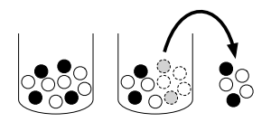
이항분포와 마찬가지로 초기하분포의 확률질량함수도 이 이야기에서 얻을 수 있다.
정리 3.4.2 (초기하 확률질량함수). \(X\sim\operatorname{HGeom}(w,b,n)\)이면 \(X\)의 확률질량함수는
\[ P(X=k)=\frac{\binom{w}{k}\binom{b}{n-k}}{\binom{w+b}{n}} \]
이다. 여기서 \(k\)는 \(0\le k\le w\)와 \(0\le n-k\le b\)를 만족하는 정수이며, 그 밖의 경우에는 \(P(X=k)=0\)이다.
증명. \(P(X=k)\)를 구하기 위해 먼저 항아리에서 흰 공 정확히 \(k\)개와 검은 공 \(n-k\)개를 뽑는 방법의 수를 센다. 같은 공들의 집합을 얻는 서로 다른 순서는 구별하지 않는다. \(k>w\)이거나 \(n-k>b\)이면 그런 추출은 불가능하다. 그렇지 않으면 곱셈법칙에 따라 흰 공 \(k\)개와 검은 공 \(n-k\)개를 뽑는 방법은 \(\binom{w}{k}\binom{b}{n-k}\)가지이고, 전체 공 \(n\)개를 뽑는 방법은 \(\binom{w+b}{n}\)가지이다. 모든 표본이 같은 가능성을 가지므로 확률의 고전적 정의에 의해
\[ P(X=k)=\frac{\binom{w}{k}\binom{b}{n-k}}{\binom{w+b}{n}} \]
이다. 이는 \(0\le k\le w\)와 \(0\le n-k\le b\)를 만족하는 정수 \(k\)에 대해 성립한다. 이 확률질량함수는 유효하다. 반데르몽드 항등식(예제 1.5.3)에 의해 분자를 모든 \(k\)에 대해 더하면 \(\binom{w+b}{n}\)이 되므로 확률질량함수의 합이 1이기 때문이다. \(\blacksquare\)
초기하분포는 겉으로 보기에 항아리 속 흰 공과 검은 공의 이야기와 공통점이 거의 없는 여러 상황에서도 등장한다. 초기하분포 이야기의 본질적인 구조는 모집단의 대상들을 두 종류의 표식으로 분류한다는 것이다. 항아리 이야기에서는 각 공이 흰색 또는 검은색이고, 이것이 첫 번째 종류의 표식이다. 또한 각 공이 표본에 포함되거나 포함되지 않으며, 이것이 두 번째 종류의 표식이다. 나아가 이 두 종류 중 적어도 하나의 표식은 완전히 무작위로 부여된다. 항아리 이야기에서는 정해진 크기의 공 집합들이 모두 같은 가능성을 갖도록 공을 무작위로 표본추출한다. 그러면 \(X\sim\operatorname{HGeom}(w,b,n)\)은 두 표식이 모두 붙은 대상의 개수를 나타낸다. 항아리 이야기에서는 흰색이면서 표본에 포함된 공의 개수이다.
다음 두 예는 서로 닮지 않은 듯하지만 항아리 이야기와 동형인 상황을 보여 준다.
예제 3.4.3 (엘크 포획-재포획). 어느 숲에 엘크 \(N\)마리가 있다. 오늘 그중 \(m\)마리를 포획하여 표식을 붙인 뒤 야생에 놓아준다. 나중에 엘크 \(n\)마리를 무작위로 재포획한다. 재포획된 엘크가 전체 엘크 중 어느 \(n\)마리의 집합이든 같은 가능성을 갖는다고 가정한다. 예를 들어 포획된 적이 있는 엘크가 다시 잡히지 않는 방법을 배우지 않는다고 가정한다.
초기하분포 이야기에 따라 재포획 표본에 들어 있는 표식이 붙은 엘크의 수는 \(\operatorname{HGeom}(m,N-m,n)\) 분포를 따른다. 이 이야기에서 표식이 붙은 엘크 \(m\)마리는 흰 공에, 표식이 없는 엘크 \(N-m\)마리는 검은 공에 대응한다. 항아리에서 공 \(n\)개를 뽑는 대신 숲에서 엘크 \(n\)마리를 재포획하는 것이다. \(\square\)
예제 3.4.4 (포커 패의 에이스). 잘 섞인 표준 카드 한 벌에서 무작위로 뽑은 다섯 장짜리 패에 들어 있는 에이스의 수는 \(\operatorname{HGeom}(4,48,5)\) 분포를 따른다. 에이스를 흰 공으로, 에이스가 아닌 카드를 검은 공으로 생각하면 이를 알 수 있다. 초기하 확률질량함수를 이용하면 패에 에이스가 정확히 세 장 있을 확률은
\[ \frac{\binom{4}{3}\binom{48}{2}}{\binom{52}{5}}\approx0.0017 \]
이다. \(\square\)
다음 표는 위의 예들을 두 종류의 표식으로 어떻게 생각할 수 있는지 정리한 것이다. 각 예에서 관심 있는 확률변수는 두 번째 열과 네 번째 열에 모두 속하는 대상의 개수이다. 즉 흰색이면서 표본에 포함된 공, 표식이 붙어 있으면서 재포획된 엘크, 에이스이면서 손에 든 카드의 개수이다.
| 이야기 | 첫 번째 표식 | 첫 번째 표식 | 두 번째 표식 | 두 번째 표식 |
|---|---|---|---|---|
| 항아리 | 흰색 | 검은색 | 표본에 포함됨 | 표본에 포함되지 않음 |
| 엘크 | 표식 있음 | 표식 없음 | 재포획됨 | 재포획되지 않음 |
| 카드 | 에이스 | 에이스가 아님 | 손에 있음 | 손에 없음 |
다음 정리는 모수가 서로 다른 두 초기하분포 사이의 대칭성을 기술한다. 증명은 초기하분포 이야기에서 두 종류의 표식을 서로 바꾸면 나온다.
정리 3.4.5. \(\operatorname{HGeom}(w,b,n)\) 분포와 \(\operatorname{HGeom}(n,w+b-n,w)\) 분포는 동일하다. 즉 \(X\sim\operatorname{HGeom}(w,b,n)\)이고 \(Y\sim\operatorname{HGeom}(n,w+b-n,w)\)이면 \(X\)와 \(Y\)는 같은 분포를 따른다.
증명. 초기하분포 이야기를 이용해 흰 공 \(w\)개와 검은 공 \(b\)개가 들어 있는 항아리에서 크기 \(n\)인 표본을 비복원추출한다고 생각하자. 흰색/검은색을 첫 번째 종류의 표식으로, 표본에 포함됨/포함되지 않음을 두 번째 종류의 표식으로 생각하고 표본 속 흰 공의 개수를 \(X\sim\operatorname{HGeom}(w,b,n)\)이라 하자. 반대로 표본에 포함됨/포함되지 않음을 첫 번째 종류의 표식으로, 흰색/검은색을 두 번째 종류의 표식으로 생각하고 흰 공 중 표본에 포함된 공의 개수를 \(Y\sim\operatorname{HGeom}(n,w+b-n,w)\)라 하자. \(X\)와 \(Y\)는 둘 다 표본에 포함된 흰 공의 개수를 세므로 같은 분포를 따른다.
또는 대수적으로 \(X\)와 \(Y\)의 확률질량함수가 같음을 확인할 수 있다.
\[ P(X=k)=\frac{\binom{w}{k}\binom{b}{n-k}}{\binom{w+b}{n}} =\frac{w!b!n!(w+b-n)!}{k!(w+b)!(w-k)!(n-k)!(b-n+k)!}, \]
\[ P(Y=k)=\frac{\binom{n}{k}\binom{w+b-n}{w-k}}{\binom{w+b}{w}} =\frac{w!b!n!(w+b-n)!}{k!(w+b)!(w-k)!(n-k)!(b-n+k)!}. \]
우리는 이야기를 이용한 증명이 덜 지루하고 기억하기 쉬우므로 더 선호한다. \(\blacksquare\)
주의 3.4.6 (이항분포와 초기하분포). 이항분포와 초기하분포는 혼동되는 경우가 많다. 둘 다 어떤 \(n\)에 대하여 0과 \(n\) 사이의 정수 값을 갖는 이산분포이며, 둘 다 \(n\)번의 베르누이 시행에서 얻은 성공 횟수로 해석할 수 있다. 초기하분포의 경우에는 재포획 표본에서 표식이 붙은 엘크 각각을 성공으로, 표식이 없는 엘크 각각을 실패로 볼 수 있다. 그러나 이항분포 이야기의 중요한 부분은 해당 베르누이 시행들이 독립이라는 것이다. 초기하분포 이야기의 베르누이 시행들은 비복원추출을 하므로 종속이다.3 표본에서 한 엘크에 표식이 붙어 있다는 사실을 알면 두 번째 엘크에도 표식이 붙어 있을 확률이 낮아진다.
3.5 이산균등분포
어떤 유한한 가능성의 집합에서 수 하나를 무작위로 고르는 상황은 확률의 고전적 정의와 밀접하게 연결되는 매우 간단한 이야기로 설명할 수 있다.
이야기 3.5.1 (이산균등분포). \(C\)를 공집합이 아닌 유한한 수의 집합이라 하자. 이 수들 가운데 하나를 균등하게 무작위로 고른다. 즉, \(C\)에 속하는 모든 값을 고를 가능성이 같다. 고른 수를 \(X\)라 하자. 그러면 \(X\)는 모수가 \(C\)인 이산균등분포를 따른다고 하며, 이를 \(X\sim\operatorname{DUnif}(C)\)로 나타낸다. \(\square\)
\(X\sim\operatorname{DUnif}(C)\)의 확률질량함수는
\[ P(X=x)=\frac{1}{|C|}\qquad(x\in C) \]
이고 그 밖의 경우에는 0이다. 확률질량함수의 합은 1이어야 하기 때문이다. 확률의 고전적 정의에 근거한 문제와 마찬가지로 이산균등분포에 근거한 문제도 경우의 수를 세는 문제로 바뀐다. 구체적으로 \(X\sim\operatorname{DUnif}(C)\)이고 \(A\subseteq C\)이면
\[ P(X\in A)=\frac{|A|}{|C|}. \]
예제 3.5.2 (무작위 쪽지). 모자 안에 쪽지가 100장 있다. 각 쪽지에는 \(1,2,\ldots,100\) 중 하나의 수가 쓰여 있으며, 같은 수가 두 번 이상 나오지는 않는다. 이 쪽지들 중 다섯 장을 한 번에 한 장씩 뽑는다.
먼저 같은 확률로 복원추출하는 경우를 생각하자.
뽑힌 쪽지 중 80 이상의 수가 적혀 있는 쪽지의 개수는 어떤 분포를 따르는가?
\(j\)번째로 뽑은 쪽지에 적힌 수는 어떤 분포를 따르는가? 단, \(1\le j\le5\)이다.
100이 적힌 쪽지가 적어도 한 번 뽑힐 확률은 얼마인가?
이제 다섯 장으로 이루어진 모든 집합이 같은 가능성으로 선택되는 비복원추출을 생각하자.4
뽑힌 쪽지 중 80 이상의 수가 적혀 있는 쪽지의 개수는 어떤 분포를 따르는가?
\(j\)번째로 뽑은 쪽지에 적힌 수는 어떤 분포를 따르는가? 단, \(1\le j\le5\)이다.
표본에 100이 적힌 쪽지가 뽑혀 있을 확률은 얼마인가?
풀이.
이항분포의 이야기에 따라 분포는 \(\operatorname{Bin}(5,0.21)\)이다.
\(j\)번째로 뽑은 값이 \(X_j\)라 하자. 대칭성에 따라 \(X_j\sim\operatorname{DUnif}(\{1,2,\ldots,100\})\)이다. 특정 쪽지는 \(j\)번째에 뽑히기를 좋아하고 다른 쪽지는 그때 뽑히기를 피하는 일은 없다. 모든 쪽지가 같은 가능성을 갖는다.
여사건을 이용하면
\[ P(\text{적어도 하나의 }j\text{에 대해 }X_j=100) =1-P(X_1\ne100,\ldots,X_5\ne100). \]
확률의 고전적 정의에 따라 이는
\[ 1-(99/100)^5\approx0.049 \]
이다. 이 풀이에서는 1장의 개념들에 새로운 표기법을 사용했을 뿐이다. 이 새로운 표기법은 간결하고 유연하므로 유용하다. 위 계산에서는 왜
\[ P(X_1\ne100,\ldots,X_5\ne100) =P(X_1\ne100)\cdots P(X_5\ne100) \]
인지 이해하는 것이 중요하다. 이 경우에는 확률의 고전적 정의로부터 따라 나오지만, 이러한 식을 생각하는 더 일반적인 방법은 확률변수의 독립성을 이용하는 것이다. 이 개념은 3.8절에서 자세히 다룬다.
초기하분포의 이야기에 따라 분포는 \(\operatorname{HGeom}(21,79,5)\)이다.
\(j\)번째로 뽑은 값이 \(Y_j\)라 하자. 대칭성에 따라 \(Y_j\sim\operatorname{DUnif}(\{1,2,\ldots,100\})\)이다. 어느 한 \(Y_i\)를 알게 되면 다른 값들에 대한 정보도 얻는다. 따라서 3.8절에서 정의할 의미에서 \(Y_1,\ldots,Y_5\)는 독립이 아니다. 그래도 대칭성은 여전히 성립한다. 조건을 붙이지 않으면 \(j\)번째로 뽑은 쪽지는 어느 쪽지나 같은 가능성을 갖기 때문이다. 이것은 \(Y_j\)의 무조건부분포이다. 우리는 어떤 쪽지도 뽑기 전의 관점에서 생각하고 있다.
\(Y_1,\ldots,Y_5\) 각각이 왜 이산균등분포를 따르는지, 그리고 조건을 붙이지 않고 \(Y_j\)를 어떻게 생각해야 하는지 더 잘 이해하기 위해 다음을 상상해 보자. 한 사람이 쪽지 다섯 장을 한 번에 한 장씩 뽑는 대신 다섯 사람이 각각 한 장씩 동시에 모자에 손을 넣어 뽑으며, 누가 어떤 쪽지를 받는지의 모든 가능성이 같다고 하자. 이렇게 표현해도 문제의 중요한 부분은 달라지지 않으며, 관련 없는 시간적 세부 사항에 주의를 빼앗기는 일을 피하는 데 도움이 된다. 예를 들어 나이가 어린 순서부터 나이가 많은 순서로 다섯 사람에게 \(1,2,\ldots,5\)라는 이름을 붙이고, \(j\)번 사람이 뽑은 값을 \(Z_j\)라 하자. 대칭성에 따라 각 \(j\)에 대해 \(Z_j\sim\operatorname{DUnif}(\{1,2,\ldots,100\})\)이다. \(Z_j\)들은 서로 종속이지만, 개별적으로 보면 각 사람은 균등하게 무작위로 쪽지 한 장을 뽑는다.
- 이제 비복원추출을 하므로 사건 \(Y_1=100,\ldots,Y_5=100\)은 서로 배반이다. 따라서
\[ P(\text{어떤 }j\text{에 대해 }Y_j=100) =P(Y_1=100)+\cdots+P(Y_5=100)=0.05. \]
타당성 점검. 이 답은 직관적으로 말이 된다. 아무것도 쓰여 있지 않은 쪽지 100장 가운데 무작위로 다섯 장을 먼저 고른 다음, 그 쪽지들에 \(1\)부터 \(100\)까지의 수를 무작위로 적는다고 생각해도 되기 때문이다. 그러면 고른 다섯 장 중 하나에 100이 적힐 가능성은 \(5/100\)이다.
비복원추출이 100을 찾기 더 쉽게 만들기 때문에, (c)의 답이 (f)의 답보다 크거나 같다면 이상할 것이다. 같은 이유로 잃어버린 물건을 찾을 때도 장소를 복원추출하는 것보다 비복원추출하는 것이 더 합리적이다. 그러나 (c)에서 같은 쪽지가 한 번 넘게 뽑힐 가능성은 작으므로, (c)의 답이 (f)의 답보다 약간 작을 뿐이라는 점도 말이 된다. 다만 생일 문제에 따르면 그 가능성은 많은 사람의 짐작만큼 작지는 않다.
보다 일반적으로 \(0\le k\le100\)일 때 쪽지 \(k\)장을 비복원추출한다면, 같은 추론으로 100을 뽑을 확률이 \(k/100\)임을 알 수 있다. 극단적인 경우인 \(k=100\)에서도 이 결과가 타당하다. 이 경우에는 쪽지를 모두 뽑기 때문이다. \(\square\)
3.6 누적분포함수
확률변수의 분포를 나타내는 또 다른 함수는 누적분포함수(CDF)이다. 이산확률변수만 갖는 확률질량함수(PMF)와 달리 누적분포함수는 모든 확률변수에 대해 정의된다.
정의 3.6.1. 확률변수 \(X\)의 누적분포함수(CDF)는 \(F_X(x)=P(X\le x)\)로 주어지는 함수 \(F_X\)이다. 혼동할 우려가 없을 때에는 아래첨자를 생략하고 누적분포함수를 단순히 \(F\)(또는 다른 문자)로 쓰기도 한다.
다음 예는 이산확률변수에 대해서는 누적분포함수와 확률질량함수를 자유롭게 서로 변환할 수 있음을 보여 준다.
예제 3.6.2. \(X\sim\operatorname{Bin}(4,1/2)\)라 하자. 그림 3.8은 \(X\)의 확률질량함수와 누적분포함수를 보여 준다.
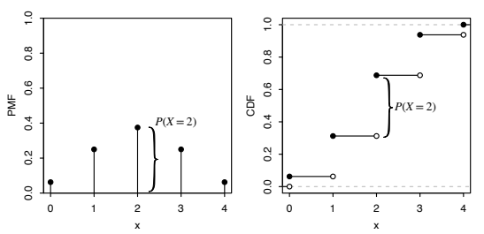
확률질량함수에서 누적분포함수로: 누적분포함수를 1.5에서 평가한 값인 \(P(X\le1.5)\)를 구하려면 지지집합에서 1.5 이하인 모든 값에 대해 확률질량함수를 더한다.
\[ P(X\le1.5)=P(X=0)+P(X=1) =\left(\frac12\right)^4+4\left(\frac12\right)^4=\frac5{16}. \]
마찬가지로 임의의 점 \(x\)에서 누적분포함수의 값은 \(x\) 이하의 값들에서 확률질량함수의 수직 막대 높이를 더한 값이다.
누적분포함수에서 확률질량함수로: 이산확률변수의 누적분포함수는 도약과 평평한 구간으로 이루어진다.5 \(x\)에서 누적분포함수의 도약 높이는 \(x\)에서의 확률질량함수 값과 같다. 예를 들어 그림 3.8에서 누적분포함수가 2에서 도약하는 높이는 확률질량함수의 해당 수직 막대 높이와 같다. 그림에서는 중괄호로 이를 나타냈다. 누적분포함수의 평평한 구간은 \(X\)의 지지집합 밖에 있는 값들에 대응하므로 그 구간에서 확률질량함수는 0이다. \(\square\)
유효한 누적분포함수는 다음 기준을 만족한다.
정리 3.6.3 (유효한 누적분포함수). 모든 누적분포함수 \(F\)는 다음 성질을 갖는다.
증가성: \(x_1\le x_2\)이면 \(F(x_1)\le F(x_2)\)이다.
우연속성: 그림 3.8에서처럼 누적분포함수는 일부 도약이 있을 가능성을 제외하면 연속이다. 도약이 있는 곳에서는 어디에서나 오른쪽에서 연속이다. 즉 임의의 \(a\)에 대해
\[F(a)=\lim_{x\to a^+}F(x).\]
양끝에서 0과 1로 수렴:
\[\lim_{x\to-\infty}F(x)=0,\qquad\lim_{x\to\infty}F(x)=1.\]
증명. 위 기준들은 모든 누적분포함수에 대해 참이지만, 간단히 하기 위해 \(F\)가 가능한 값이 \(0,1,2,\ldots\)인 이산확률변수 \(X\)의 누적분포함수인 경우에만 증명한다. 이 기준을 어떻게 시각화하는지에 관한 예로 그림 3.8을 생각해 보자. 그림의 누적분포함수는 일부 평평한 구간을 갖지만 증가하고, 오른쪽에서 연속이며, \(x\to-\infty\)일 때 0에, \(x\to\infty\)일 때 1에 수렴한다. 오른쪽 연속이라는 것은 도약을 제외하고 연속이고 각 도약의 아래쪽에는 빈 점, 위쪽에는 채운 점이 있다는 뜻이다. 이 예에서는 실제로 0과 1에 도달하지만 어떤 예에서는 둘 중 하나 또는 둘 다에 가까워지기만 하고 도달하지 않을 수 있다.
첫 번째 기준은 사건 \(\{X\le x_1\}\)이 사건 \(\{X\le x_2\}\)의 부분집합이므로 \(P(X\le x_1)\le P(X\le x_2)\)라는 사실에서 따른다.
두 번째 기준을 위해 다음을 보자.
\[P(X\le x)=P(X\le\lfloor x\rfloor),\]
여기서 \(\lfloor x\rfloor\)는 \(x\)보다 작거나 같은 가장 큰 정수이다. 예를 들어 \(X\)는 정수 값을 가지므로 \(P(X\le4.9)=P(X\le4)\)이다. 따라서 \(a+b<\lfloor a\rfloor+1\)이 되도록 충분히 작은 모든 \(b>0\)에 대해 \(F(a+b)=F(a)\)이다. 예를 들어 \(a=4.9\)일 때는 \(0<b<0.1\)이면 이 관계가 성립한다. 이는 \(F(a)=\lim_{x\to a^+}F(x)\)임을 뜻한다. 사실 \(x\)가 \(a\)의 오른쪽에서 충분히 가까우면 \(F(x)\)가 \(F(a)\)와 같다고 말하므로 훨씬 더 강한 주장이다.
세 번째 기준을 위해서는 \(x<0\)일 때 \(F(x)=0\)이고,
\[ \lim_{x\to\infty}F(x) =\lim_{x\to\infty}P(X\le\lfloor x\rfloor) =\lim_{x\to\infty}\sum_{n=0}^{\lfloor x\rfloor}P(X=n) =\sum_{n=0}^{\infty}P(X=n)=1. \]
\(\blacksquare\)
역도 참이다. 5장에서는 이 기준을 만족하는 함수 \(F\)가 주어지면 \(F\)를 누적분포함수로 갖는 확률변수를 구성할 수 있음을 보일 것이다.
정리하면 지금까지 확률변수의 분포를 표현하는 서로 동등한 세 가지 방법을 살펴보았다. 그중 두 가지는 확률질량함수와 누적분포함수이다. 이 두 함수는 같은 정보를 담고 있는데, 확률질량함수로부터 누적분포함수를 항상 구할 수 있고 그 역도 가능하기 때문이다. 이산확률변수에서는 일반적으로 확률질량함수가 다루기 더 쉽다. 누적분포함수를 계산하려면 합을 구해야 하기 때문이다.6
분포를 나타내는 세 번째 방법은 그 분포가 어떻게 생겨날 수 있는지를 정확하게 설명하는 이야기이다. 우리는 이항분포와 초기하분포의 이야기를 사용해 해당 확률질량함수를 유도했다. 따라서 이야기와 확률질량함수도 같은 정보를 담고 있지만, 확률질량함수를 이용한 계산보다 이야기를 이용하면 더 직관적인 증명을 얻는 경우가 많다.
3.7 확률변수의 함수
이 절에서는 확률변수에 함수를 적용한다는 것이 무엇인지 살펴보고, 확률변수의 함수가 왜 확률변수인지 이해할 것이다. 즉 \(X\)가 확률변수라면 \(X^2\), \(e^X\), \(\sin(X)\)도 확률변수이며, 어떤 함수 \(g:\mathbb R\to\mathbb R\)에 대해서든 \(g(X)\)도 확률변수이다.
예를 들어 두 농구팀 A와 B가 7경기 대결을 치른다고 생각하고, 팀 A의 승수(이긴 경기 수)를 \(X\)라 하자. 두 팀의 실력이 같고 경기들이 독립이면 \(X\sim\operatorname{Bin}(7,1/2)\)이다. \(g(x)=7-x\)로 두고, \(x\ge4\)이면 \(h(x)=1\), \(x<4\)이면 \(h(x)=0\)으로 두자. 그러면 \(g(X)=7-X\)는 팀 B의 승수이고, \(h(X)\)는 팀 A가 과반수 경기에서 이겼는지를 나타내는 지시확률변수이다. \(X\)가 확률변수이므로 \(g(X)\)와 \(h(X)\)도 둘 다 확률변수이다.
확률변수의 함수를 형식적으로 어떻게 정의하는지 보려고 조금 되돌아가자. 이 장의 처음에서 원소가 6개인 표본공간에 정의된 확률변수 \(X\)를 생각했다. 그림 3.1에서는 \(X\)가 표본공간의 각 조약돌을 실수에 대응시키는 모습을 화살표로 나타냈고, 그림 3.2의 왼쪽 절반에서는 이와 동등하게 \(X\)가 각 조약돌 안에 실수 하나를 적는다고 생각할 수 있음을 보였다.
이제 원한다면 조약돌 안에 적힌 모든 수에 같은 함수 \(g\)를 적용할 수 있다. \(X(s_1)\)부터 \(X(s_6)\)까지의 수 대신 이제 \(g(X(s_1))\)부터 \(g(X(s_6))\)까지의 수를 얻는다. 이것은 표본 결과를 실수에 대응시키는 새로운 대응을 제공한다. 즉 새로운 확률변수 \(g(X)\)를 만든 것이다.
정의 3.7.1 (확률변수의 함수). 표본공간이 \(S\)인 실험, 확률변수 \(X\), 함수 \(g:\mathbb R\to\mathbb R\)가 주어졌을 때, \(g(X)\)는 모든 \(s\in S\)를 \(g(X(s))\)에 대응시키는 확률변수이다.7
구체적으로 \(g(x)=\sqrt{x}\)를 취하면, 그림 3.9는 \(g(X)\)가 함수 \(X\)와 \(g\)의 합성, 즉 “먼저 \(X\)를 적용한 다음 \(g\)를 적용”한 것임을 보여 준다. 그림 3.10은 표본 결과에 직접 값을 적어 \(g(X)\)를 더 간결하게 나타낸다. 두 그림은 모두 \(g(X)\)가 확률변수임을 보여 준다. \(X\)의 값이 4로 결정되면 \(g(X)\)의 값은 2로 결정된다.
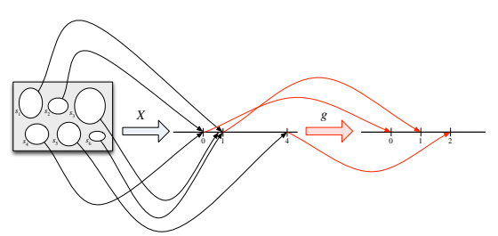
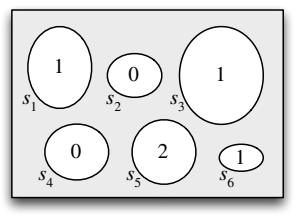
확률질량함수를 알고 있는 이산확률변수 \(X\)가 주어졌을 때 \(Y=g(X)\)의 확률질량함수는 어떻게 구할까? \(g\)가 일대일함수인 경우에는 답이 간단하다. \(Y\)의 지지집합은 \(X\)의 지지집합에 속하는 모든 \(x\)에 대해 \(g(x)\)를 모은 집합이며,
\[P(Y=g(x))=P(g(X)=g(x))=P(X=x).\]
\(Y=g(X)\)이고 \(g\)가 일대일인 경우를 다음 표로 나타냈다. 핵심은 \(X\)의 서로 다른 가능한 값이 \(x_1,x_2,\ldots\)이고 그 확률이 각각 \(p_1,p_2,\ldots\)라면, \(Y\)의 서로 다른 가능한 값은 \(g(x_1),g(x_2),\ldots\)이고 확률 목록은 같은 \(p_1,p_2,\ldots\)라는 것이다.
| \(x\) | \(P(X=x)\) |
|---|---|
| \(x_1\) | \(p_1\) |
| \(x_2\) | \(p_2\) |
| \(x_3\) | \(p_3\) |
| \(\vdots\) | \(\vdots\) |
\(X\)의 확률질량함수를 표로 나타낸 것이다.
| \(y\) | \(P(Y=y)\) |
|---|---|
| \(g(x_1)\) | \(p_1\) |
| \(g(x_2)\) | \(p_2\) |
| \(g(x_3)\) | \(p_3\) |
| \(\vdots\) | \(\vdots\) |
\(Y\)의 확률질량함수를 표로 나타낸 것이다.
이는 낯선 분포를 갖는 확률변수의 확률질량함수를 구하는 전략을 시사한다. 분포를 알고 있는 확률변수의 일대일함수로 그 확률변수를 표현해 보는 것이다. 다음 예가 이 방법을 보여 준다.
예제 3.7.2 (임의보행). 입자 하나가 수직선 위에서 \(n\)걸음 이동한다. 입자는 0에서 출발하고 매 걸음에서 같은 확률로 오른쪽 또는 왼쪽으로 한 단위 이동한다. 모든 걸음이 독립이라고 가정한다. \(n\)걸음 후 입자의 위치를 \(Y\)라 하자. \(Y\)의 확률질량함수를 구하라.
풀이. 오른쪽을 성공, 왼쪽을 실패로 보아 각 걸음을 베르누이 시행으로 생각하자. 그러면 입자가 오른쪽으로 이동한 횟수는 \(\operatorname{Bin}(n,1/2)\) 확률변수이고, 이를 \(X\)라 부를 수 있다. \(X=j\)이면 입자는 오른쪽으로 \(j\)걸음, 왼쪽으로 \(n-j\)걸음 이동했으므로 최종 위치는 \(j-(n-j)=2j-n\)이다. 따라서 \(Y\)를 \(X\)의 일대일함수 \(Y=2X-n\)으로 표현할 수 있다. \(X\)의 가능한 값이 \(\{0,1,2,\ldots,n\}\)이므로 \(Y\)의 가능한 값은 \(\{-n,2-n,4-n,\ldots,n\}\)이다.
그러면 \(X\)의 확률질량함수에서 \(Y\)의 확률질량함수를 구할 수 있다.
\[ P(Y=k)=P(2X-n=k)=P\left(X=\frac{n+k}{2}\right) =\binom{n}{(n+k)/2}\left(\frac12\right)^n, \]
여기서 \(k\)는 \(-n\) 이상 \(n\) 이하의 정수이고 \(n+k\)는 짝수이다. \(\square\)
\(g\)가 일대일이 아니라면 주어진 \(y\)에 대해 \(g(x)=y\)인 \(x\)가 여러 개일 수 있다. \(P(g(X)=y)\)를 계산하려면 \(X\)가 이 후보 값들 각각을 취할 확률을 모두 더해야 한다.
정리 3.7.3 (\(g(X)\)의 확률질량함수). \(X\)를 이산확률변수, \(g:\mathbb R\to\mathbb R\)이라 하자. 그러면 \(g(X)\)의 지지집합은 \(X\)의 지지집합에 속한 \(x\) 중 적어도 하나에 대해 \(g(x)=y\)가 되는 모든 \(y\)의 집합이다. \(g(X)\)의 확률질량함수는 그 지지집합의 모든 \(y\)에 대해
\[P(g(X)=y)=\sum_{x:g(x)=y}P(X=x)\]
이다.
예제 3.7.4. 앞의 예를 계속하여 \(n\)걸음 후 입자가 원점에서 떨어진 거리를 \(D\)라 하자. \(n\)이 짝수라고 가정한다. \(D\)의 확률질량함수를 구하라.
풀이. \(D=|Y|\)로 쓸 수 있다. 이는 \(Y\)의 함수이지만 일대일은 아니다. 사건 \(D=0\)은 사건 \(Y=0\)과 같다. \(k=2,4,\ldots,n\)에 대해 사건 \(D=k\)는 사건 \(\{Y=k\}\cup\{Y=-k\}\)와 같다. 따라서 \(D\)의 확률질량함수는
\[P(D=0)=\binom{n}{n/2}\left(\frac12\right)^n,\]
\[P(D=k)=P(Y=k)+P(Y=-k)=2\binom{n}{(n+k)/2}\left(\frac12\right)^n,\]
이며 \(k=2,4,\ldots,n\)이다. 마지막 단계에서는 대칭성을 이용해 \(P(Y=k)=P(Y=-k)\)임을 알았다. 원래 임의보행이 오른쪽으로 갈 때마다 왼쪽으로 가고 왼쪽으로 갈 때마다 오른쪽으로 가는 새로운 임의보행을 상상해 보자. \(\square\)
하나의 확률변수에 함수를 적용할 때 사용한 것과 같은 추론을 여러 확률변수의 함수를 다루는 데도 확장할 수 있다. 우리는 이미 덧셈 함수, 즉 두 수 \(x,y\)를 그 합 \(x+y\)에 대응시키는 함수에서 이런 예를 보았다. 예제 3.2.5에서는 주사위를 던져 얻은 \(X\)와 \(Y\)에 대해 \(T=X+Y\)를 그 자체로 하나의 확률변수로 볼 수 있음을 확인했다.
정의 3.7.5 (두 확률변수의 함수). 표본공간이 \(S\)인 실험에서 확률변수 \(X\)와 \(Y\)가 각각 \(s\in S\)를 \(X(s)\)와 \(Y(s)\)에 대응시킨다면, \(g(X,Y)\)는 \(s\)를 \(g(X(s),Y(s))\)에 대응시키는 확률변수이다.
여기서는 \(X\)와 \(Y\)가 같은 표본공간 \(S\)에 정의되어 있다고 가정한다는 점에 유의하자. 보통은 우리가 다루고자 하는 확률변수들을 모두 포괄할 만큼 표본공간 \(S\)가 충분히 풍부하게 선택되었다고 가정한다. 예를 들어 \(X\)가 동전 던지기에, \(Y\)가 주사위 던지기에 기반하고 처음에는 \(X\)에 표본공간 \(S_1=\{H,T\}\)를, \(Y\)에 표본공간 \(S_2=\{1,2,3,4,5,6\}\)을 사용했다고 하자. 그러면 \(X\)와 \(Y\)가 모두 더 풍부한 공간 \(S=S_1\times S_2=\{(s_1,s_2):s_1\in S_1,s_2\in S_2\}\)에 정의되도록 쉽게 다시 정의할 수 있다.
확률변수 \(g(X,Y)\)가 나타내는 \(S\)에서 \(\mathbb R\)로의 대응을 이해하는 한 가지 방법은 가능한 여러 결과 아래에서 \(X\), \(Y\), \(g(X,Y)\)의 값을 보여 주는 표를 이용하는 것이다. \(X+Y\)를 확률변수로 해석하는 것은 직관적이다. \(X=x\)와 \(Y=y\)를 관찰하면 \(X+Y\)는 \(x+y\)로 결정된다. \(\max(X,Y)\)처럼 덜 익숙한 예에서는 이것을 확률변수로 어떻게 해석할지 확신하지 못하는 학생이 많다. 그러나 생각은 같다. \(X=x\)와 \(Y=y\)를 관찰하면 \(\max(X,Y)\)는 \(\max(x,y)\)로 결정된다.
예제 3.7.6 (주사위를 두 번 던져 얻은 최댓값). 공정한 6면체 주사위 두 개를 던진다. 첫 번째 주사위의 눈을 \(X\), 두 번째 주사위의 눈을 \(Y\)라 하자. 다음 표는 예제 3.2.5의 표와 마찬가지로 표본공간의 결과 36개 중 7개에 대해 \(X\), \(Y\), \(\max(X,Y)\)의 값을 나타낸 것이다.
| \(s\) | \(X\) | \(Y\) | \(\max(X,Y)\) |
|---|---|---|---|
| \((1,2)\) | 1 | 2 | 2 |
| \((1,6)\) | 1 | 6 | 6 |
| \((2,5)\) | 2 | 5 | 5 |
| \((3,1)\) | 3 | 1 | 3 |
| \((4,3)\) | 4 | 3 | 4 |
| \((5,4)\) | 5 | 4 | 5 |
| \((6,6)\) | 6 | 6 | 6 |
따라서 \(\max(X,Y)\)는 각 표본 결과에 숫자 하나를 부여한다. 확률질량함수는 다음과 같다.
\[ \begin{aligned} P(\max(X,Y)=1)&=1/36,\\ P(\max(X,Y)=2)&=3/36,\\ P(\max(X,Y)=3)&=5/36,\\ P(\max(X,Y)=4)&=7/36,\\ P(\max(X,Y)=5)&=9/36,\\ P(\max(X,Y)=6)&=11/36. \end{aligned} \]
이 확률들은 \(6\times6\) 격자에 \(\max(x,y)\)의 값을 표로 적고 각 값이 격자에 몇 번 나타나는지 세어 구할 수도 있고, 다음과 같이 계산하여 구할 수도 있다.
\[ \begin{aligned} P(\max(X,Y)=5) &=P(X=5,Y\le4)+P(X\le4,Y=5)+P(X=5,Y=5)\\ &=2P(X=5,Y\le4)+1/36\\ &=2(4/36)+1/36=9/36. \end{aligned} \]
\(\square\)
주의 3.7.7 (범주 오류와 유감주술). 확률에서 흔한 실수 중 상당수는 다음 기본 대상들 가운데 둘을 서로 혼동하는 데서 비롯된다. 분포, 확률변수, 사건, 수가 그것이다. 이런 실수는 범주 오류의 사례이다. 일반적으로 범주 오류는 단순히 우연히 틀린 것이 아니라, 잘못된 범주의 대상에 근거하기 때문에 반드시 틀릴 수밖에 없는 실수이다. 예를 들어 “보스턴에는 몇 명이 사는가?”라는 질문에 “\(-42\)”, “\(\pi\)”, “분홍 코끼리들”이라고 답하는 것은 범주 오류이다. 도시의 인구수를 모를 수는 있지만, 어느 시점에서든 그것이 음이 아닌 정수라는 사실은 알기 때문이다. 범주 자체가 틀리는 일을 피하려면 답이 어떤 범주에 속해야 하는지 항상 생각하자.
특히 흔한 범주 오류는 확률변수와 그 분포를 혼동하는 것이다. 우리는 이 오류를 유감주술이라고 부른다. 이 용어는 인류학에서 유래하며, 어떤 대상의 표현물을 조작하여 그 대상에 영향을 줄 수 있다는 믿음을 뜻한다. 다음 말은 확률변수와 그 분포의 차이를 이해하는 데 도움이 된다.
말은 사물이 아니고, 지도는 영토가 아니다. — 알프레드 코르지브스키
확률변수의 분포는 그 확률변수를 설명하는 지도나 청사진으로 생각할 수 있다. 서로 다른 집들이 같은 청사진을 공유할 수 있듯이, 서로 다른 확률변수들은 그 확률변수가 요약하는 실험과 대응이 출발하는 표본공간이 서로 달라도 같은 분포를 가질 수 있다.
다음은 유감주술의 두 예이다.
확률변수 \(X\)가 주어졌을 때 \(X\)의 확률질량함수에 2를 곱하여 \(2X\)의 확률질량함수를 얻으려고 하는 것. 확률질량함수에 2를 곱하면 확률들의 합이 더 이상 1이 아니므로 이는 말이 되지 않는다. 앞서 보았듯이 \(X\)가 값 \(x_j\)를 확률 \(p_j\)로 취하면 \(2X\)는 값 \(2x_j\)를 확률 \(p_j\)로 취한다. 따라서 \(2X\)의 확률질량함수는 \(X\)의 확률질량함수를 가로로 늘린 것이다. 확률질량함수에 2를 곱했을 때처럼 세로로 늘린 것이 아니다. 그림 3.11은 지지집합이 \(\{0,1,2,3,4\}\)인 이산확률변수 \(X\)의 확률질량함수와 지지집합이 \(\{0,2,4,6,8\}\)인 \(2X\)의 확률질량함수를 보여 준다. \(X\)는 홀수 값을 취할 수 있지만 \(2X\)는 반드시 짝수임에 유의하자.
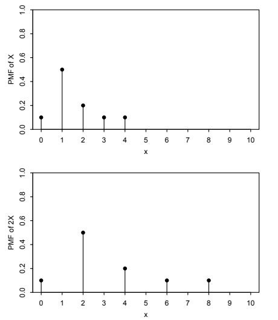
그림 3.11: \(X\)의 확률질량함수(위)와 \(2X\)의 확률질량함수(아래). \(X\)와 \(Y\)가 같은 분포를 가지므로 반드시 항상 같아야 한다고, 즉 \(P(X=Y)=1\)이라고 주장하는 것. 두 확률변수가 같은 분포를 갖는다고 해서 항상 같거나 심지어 한 번이라도 같아야 하는 것은 아니다. 예제 3.2.5에서 이를 보았다. 다른 예로 공정한 동전을 한 번 던진다고 생각하자. 앞면의 지시확률변수를 \(X\), 뒷면의 지시확률변수를 \(Y=1-X\)라 하자. \(X\)와 \(Y\)는 둘 다 \(\operatorname{Bern}(1/2)\) 분포를 따르지만 사건 \(X=Y\)는 불가능하다. \(X\)와 \(Y\)의 확률질량함수는 같은 함수이지만, \(X\)와 \(Y\)는 표본공간에서 실수로 가는 서로 다른 대응이다.
두 번째 던지기에서 앞면의 지시확률변수를 \(Z\)라 하고, 이 던지기가 첫 번째 던지기와 독립이라고 하자. 그러면 \(Z\)도 \(\operatorname{Bern}(1/2)\)이지만 \(X\)와 같은 확률변수는 아니다. 여기서는
\[P(Z=X)=P(HH\text{ 또는 }TT)=1/2.\]
3.8 확률변수의 독립
사건의 독립이라는 개념이 있었던 것처럼 확률변수의 독립도 정의할 수 있다. 직관적으로 두 확률변수 \(X\)와 \(Y\)가 독립이면 \(X\)의 값을 알아도 \(Y\)의 값에 대한 정보를 얻지 못하며, 그 반대도 마찬가지이다. 다음 정의는 이 생각을 형식화한다.
정의 3.8.1 (두 확률변수의 독립). 모든 \(x,y\in\mathbb R\)에 대해
\[ P(X\le x,Y\le y)=P(X\le x)P(Y\le y) \]
이면 확률변수 \(X\)와 \(Y\)는 독립이라고 한다.
이산형인 경우 이는 \(X\)의 지지집합에 속하는 모든 \(x\)와 \(Y\)의 지지집합에 속하는 모든 \(y\)에 대해
\[P(X=x,Y=y)=P(X=x)P(Y=y)\]
가 성립한다는 조건과 동치이다.
확률변수가 둘보다 많을 때의 정의도 비슷하다.
정의 3.8.2 (여러 확률변수의 독립). 모든 \(x_1,\ldots,x_n\in\mathbb R\)에 대해
\[ P(X_1\le x_1,\ldots,X_n\le x_n) =P(X_1\le x_1)\cdots P(X_n\le x_n) \]
이면 확률변수 \(X_1,\ldots,X_n\)은 독립이다. 확률변수가 무한히 많을 때에는 그 확률변수들의 모든 유한 부분집합이 독립이면 전체가 독립이라고 한다.
이를 \(n\)개 사건의 독립성 조건과 비교하면, 사건의 경우에는 \(\binom n2\)개 쌍 모두에 대한 쌍별 독립, \(\binom n3\)개 삼중항 모두에 대한 세 사건의 독립 등을 확인해야 했지만 \(X_1,\ldots,X_n\)의 독립에는 등식 하나만 필요한 것처럼 보여 이상하게 느껴질 수 있다. 그러나 정의를 자세히 살펴보면 확률변수의 독립은 가능한 모든 \(x_1,\ldots,x_n\)에 대해 등식이 성립할 것을 요구한다. 조건이 무한히 많은 것이다! 위 등식이 성립하지 않는 값의 나열 \(x_1,\ldots,x_n\)을 단 하나만 찾아도 \(X_1,\ldots,X_n\)은 독립이 아니다.
주의 3.8.3. \(X_1,\ldots,X_n\)이 독립이면 이들은 쌍별 독립이다. 즉 \(i\ne j\)일 때 \(X_i\)와 \(X_j\)는 독립이다. \(X_i\)와 \(X_j\)의 독립성을 증명하는 핵심 아이디어는 독립의 정의에서 \(x_i,x_j\)를 제외한 모든 \(x_k\)를 \(\infty\)로 보내는 것이다. \(X_k<\infty\)가 참이라는 것을 이미 알고 있기 때문이다. 다만 극한을 완전히 정당화하려면 어느 정도의 작업이 필요하다. 그러나 2장에서 사건에 대해 보았듯이 일반적으로 쌍별 독립이라고 해서 독립인 것은 아니다.
예제 3.8.4. 공정한 주사위 두 개를 던질 때 첫 번째 주사위의 눈을 \(X\), 두 번째 주사위의 눈을 \(Y\)라 하면 \(X+Y\)와 \(X-Y\)는 독립이 아니다. 왜냐하면
\[ 0=P(X+Y=12,X-Y=1) \ne P(X+Y=12)P(X-Y=1)=\frac1{36}\cdot\frac5{36} \]
이기 때문이다. 합이 12임을 알면 차이는 반드시 0임을 알 수 있으므로, 두 확률변수는 서로에 대한 정보를 제공한다. \(\square\)
\(X\)와 \(Y\)가 독립이면 예를 들어 \(X^2\)도 \(Y^4\)와 독립이다. 만약 \(X^2\)이 \(Y^4\)에 대한 정보를 제공한다면, \(X\)도 \(Y\)에 대한 정보를 제공할 것이기 때문이다. 이때 \(X^2\)과 \(Y^4\)를 중간 단계로 이용한다. \(X\)가 \(X^2\)을 결정하고, \(X^2\)은 \(Y^4\)에 대한 정보를 주며, \(Y^4\)은 다시 \(Y\)에 대한 정보를 준다. 보다 일반적으로 다음 결과가 성립한다. 형식적인 증명은 생략한다.
정리 3.8.5 (독립인 확률변수의 함수). \(X\)와 \(Y\)가 독립인 확률변수라면 \(X\)의 어떤 함수도 \(Y\)의 어떤 함수와 독립이다.
정의 3.8.6 (i.i.d.). 앞으로 우리는 서로 독립이고 같은 분포를 따르는 확률변수들을 자주 다룬다. 이러한 확률변수들을 독립이고 동일한 분포를 따른다고 하며, 줄여서 i.i.d.라고 한다.
주의 3.8.7 (독립과 동일한 분포). ‘독립’과 ‘동일한 분포’는 흔히 혼동하지만 완전히 다른 두 개념이다. 확률변수들이 서로에 대한 정보를 주지 않으면 독립이고, 같은 확률질량함수 또는 동등하게 같은 누적분포함수를 가지면 동일한 분포를 따른다.8 두 확률변수가 독립인지의 여부는 같은 분포를 따르는지의 여부와 아무 관련이 없다. 확률변수들은 다음과 같을 수 있다.
- 독립이고 동일한 분포: \(X\)를 주사위를 한 번 던진 결과, \(Y\)를 독립적으로 두 번째 주사위를 던진 결과라 하자. 그러면 \(X\)와 \(Y\)는 i.i.d.이다.
- 독립이지만 동일한 분포는 아님: \(X\)를 주사위를 던진 결과, \(Y\)를 지금부터 한 달 뒤 다우 존스 지수의 종가라고 하자. 그러면 \(X\)와 \(Y\)는 서로에 대한 정보를 주지 않을 것이고—간절히 바라건대—같은 분포도 따르지 않는다.
- 종속이지만 동일한 분포: \(X\)를 공정한 동전을 독립적으로 \(n\)번 던졌을 때 앞면이 나온 횟수, \(Y\)를 같은 \(n\)번의 던지기에서 뒷면이 나온 횟수라고 하자. 그러면 \(X\)와 \(Y\)는 둘 다 \(\operatorname{Bin}(n,1/2)\) 분포를 따르지만 매우 강하게 종속되어 있다. \(X\)를 알면 \(Y\)를 정확히 알 수 있다.
- 종속이고 동일한 분포도 아님: \(X\)를 다음 선거 이후 미국 하원에서 다수당이 계속 주도권을 유지하는지 나타내는 지시확률변수, \(Y\)를 선거 전후 한 달 이내에 실시된 여론조사에서 그 다수당의 평균 호감도로 하자. 그러면 \(X\)와 \(Y\)는 종속이고 같은 분포도 따르지 않는다.
i.i.d. 베르누이 확률변수들을 더하면 이항분포의 이야기를 대수적인 형태로 나타낼 수 있다.
정리 3.8.8. \(X\sim\operatorname{Bin}(n,p)\)를 성공 확률이 \(p\)인 독립 베르누이 시행 \(n\)번에서 성공한 횟수로 생각하면, \(X=X_1+\cdots+X_n\)으로 쓸 수 있다. 여기서 \(X_i\)들은 i.i.d. \(\operatorname{Bern}(p)\)이다.
증명. \(i\)번째 시행이 성공이면 \(X_i=1\), 실패이면 \(X_i=0\)으로 두자. 마치 시행마다 담당자 한 명씩을 배정하고, 자기 시행이 성공한 사람에게 손을 들라고 하는 것과 같다. 올라간 손의 수를 세면, 즉 \(X_i\)들을 더하면 전체 성공 횟수를 얻는다. \(\blacksquare\)
이항분포의 중요한 사실은 성공 확률이 같은 독립 이항 확률변수들의 합도 이항분포를 따른다는 것이다.
정리 3.8.9. \(X\sim\operatorname{Bin}(n,p)\), \(Y\sim\operatorname{Bin}(m,p)\)이고 \(X\)와 \(Y\)가 독립이면 \(X+Y\sim\operatorname{Bin}(n+m,p)\)이다.
증명. 각각 유용한 기법을 보여 주므로 세 가지 증명을 제시한다.
전체 확률의 법칙: \(X\) 또는 원하는 경우 \(Y\)를 조건으로 삼고 전체 확률의 법칙을 이용하여 \(X+Y\)의 확률질량함수를 직접 구할 수 있다. \(q=1-p\)라 하면9
\[ \begin{aligned} P(X+Y=k) &=\sum_{j=0}^k P(X+Y=k\mid X=j)P(X=j)\\ &=\sum_{j=0}^k P(Y=k-j)P(X=j)\\ &=\sum_{j=0}^k\binom m{k-j}p^{k-j}q^{m-k+j}\binom njp^jq^{n-j}\\ &=p^kq^{n+m-k}\sum_{j=0}^k\binom m{k-j}\binom nj\\ &=\binom{n+m}{k}p^kq^{n+m-k}. \end{aligned} \]
두 번째 줄에서는 \(X\)와 \(Y\)의 독립성을 이용하여 다음 식에서 조건을 없앴다.
\[P(X+Y=k\mid X=j)=P(Y=k-j\mid X=j)=P(Y=k-j).\]
마지막 줄에서는 반데르몽드 항등식
\[\sum_{j=0}^k\binom m{k-j}\binom nj=\binom{n+m}{k}\]
을 이용했다. 얻은 식은 \(\operatorname{Bin}(n+m,p)\)의 확률질량함수이므로 \(X+Y\sim\operatorname{Bin}(n+m,p)\)이다.
표현: 훨씬 간단한 증명은 \(X\)와 \(Y\) 모두를 i.i.d. \(\operatorname{Bern}(p)\) 확률변수들의 합으로 표현하는 것이다. 즉 \(X=X_1+\cdots+X_n\), \(Y=Y_1+\cdots+Y_m\)이고 \(X_i\)와 \(Y_j\)는 모두 i.i.d. \(\operatorname{Bern}(p)\)이다. 그러면 \(X+Y\)는 i.i.d. \(\operatorname{Bern}(p)\) 확률변수 \(n+m\)개의 합이므로 앞의 정리에 따라 그 분포는 \(\operatorname{Bin}(n+m,p)\)이다.
이야기: 이항분포의 이야기에 따라 \(X\)는 독립인 시행 \(n\)번에서의 성공 횟수이고 \(Y\)는 그에 더해 수행한 독립인 시행 \(m\)번에서의 성공 횟수이다. 모든 시행의 성공 확률은 같으므로 \(X+Y\)는 시행 \(n+m\)번에서의 전체 성공 횟수이고, 이는 \(\operatorname{Bin}(n+m,p)\) 분포의 이야기이다. \(\blacksquare\)
물론 확률변수의 독립에 대한 정의가 있다면 확률변수의 조건부 독립에 대해서도 유사한 정의가 있어야 한다.
정의 3.8.10 (확률변수의 조건부 독립). 모든 \(x,y\in\mathbb R\)과 \(Z\)의 지지집합에 속하는 모든 \(z\)에 대해
\[ P(X\le x,Y\le y\mid Z=z) =P(X\le x\mid Z=z)P(Y\le y\mid Z=z) \]
이면 확률변수 \(X\)와 \(Y\)는 확률변수 \(Z\)가 주어졌을 때 조건부 독립이다.10
이산확률변수에 대한 동치인 정의는 다음을 요구하는 것이다.
\[ P(X=x,Y=y\mid Z=z) =P(X=x\mid Z=z)P(Y=y\mid Z=z). \]
이름에서 예상할 수 있듯이, 이는 모든 곳에서 \(Z=z\)를 조건으로 삼고 \(Z\)의 지지집합에 속하는 모든 \(z\)에 대해 등식이 성립할 것을 요구한다는 점을 제외하면 독립의 정의와 같다.
정의 3.8.11 (조건부 확률질량함수). 이산확률변수 \(X,Z\)에 대해 \(P(X=x\mid Z=z)\)를 \(z\)를 고정한 상태에서 \(x\)의 함수로 보면, 이를 \(Z=z\)가 주어졌을 때 \(X\)의 조건부 확률질량함수라고 한다.
확률변수의 독립은 조건부 독립을 뜻하지 않으며, 그 역도 성립하지 않는다. 먼저 독립이라고 해서 조건부 독립이 성립하지 않는 이유를 보자.
예제 3.8.12 (동전 맞추기). 동전 맞추기라는 간단한 게임을 생각하자. 두 참가자 A와 B는 각각 공정한 동전 하나를 가지고 독립적으로 동전을 던진다. 동전의 면이 같으면 A가 이기고, 다르면 B가 이긴다. A의 동전이 앞면이면 \(X=1\), 그렇지 않으면 \(X=-1\)이라 하자. B에 대해서도 같은 방식으로 \(Y\)를 정의한다. 이 확률변수 \(X,Y\)를 무작위 부호라고 한다.
\(Z=XY\)라 하자. 그러면 A가 이기면 \(Z=1\), B가 이기면 \(Z=-1\)이다. \(X\)와 \(Y\)는 조건을 붙이지 않으면 독립이지만, \(Z=1\)이 주어지면 \(X=Y\)라는 것을 안다. 두 동전의 면이 같기 때문이다. 따라서 \(Z\)가 주어졌을 때 \(X\)와 \(Y\)는 조건부 종속이다. \(\square\)
예제 3.8.13 (두 친구). 예제 2.5.11의 ‘나에게 전화하는 친구는 두 명뿐이다’라는 상황을 다시 생각하되 이번에는 확률변수 표기를 사용하자. 다음 금요일에 앨리스가 나에게 전화하는 사건의 지시확률변수를 \(X\), 밥이 전화하는 사건의 지시확률변수를 \(Y\), 정확히 한 명만 전화하는 사건의 지시확률변수를 \(Z\)라 하자. 그러면 가정에 따라 \(X\)와 \(Y\)는 독립이다. 그러나 \(Z=1\)이 주어지면 \(X\)와 \(Y\)는 완전히 종속이다. \(Z=1\)이 주어졌을 때 \(Y=1-X\)이기 때문이다. \(\square\)
다음으로 조건부 독립이 독립을 뜻하지 않는 이유를 보자.
예제 3.8.14 (정체를 모르는 상대). 똑같이 생긴 쌍둥이 중 한 명과 테니스 두 경기를 치르려 한다고 하자. 한 쌍둥이와는 실력이 대등하고 다른 쌍둥이와 경기하면 이길 확률이 \(3/4\)이다. 두 경기가 모두 끝나기 전에는 어느 쌍둥이와 경기하는지 알아볼 수 없다고 하자. 실력이 대등한 쌍둥이와 경기하는 사건의 지시확률변수를 \(Z\), 첫 번째와 두 번째 경기에서 이기는 사건의 지시확률변수를 각각 \(X,Y\)라 하자.11
\(Z=1\)이라는 조건 아래에서 \(X,Y\)는 i.i.d. \(\operatorname{Bern}(1/2)\)이고, \(Z=0\)이라는 조건 아래에서는 i.i.d. \(\operatorname{Bern}(3/4)\)이다. 따라서 \(Z\)가 주어졌을 때 \(X\)와 \(Y\)는 조건부 독립이다. 조건을 붙이지 않으면 \(X=1\)을 관측했을 때 우리가 더 실력이 약한 쌍둥이와 경기하고 있을 가능성이 높아지므로 \(X\)와 \(Y\)는 종속이다. 즉
\[P(Y=1\mid X=1)>P(Y=1).\]
이전 경기들은 상대가 누구인지 추론하는 데 도움이 되는 정보를 주며, 그 정보는 다시 앞으로의 경기를 예측하는 데 도움이 된다! 이 예제는 예제 2.3.7의 ‘무작위 동전’ 상황과 같은 구조라는 점에 유의하자. \(\square\)
3.9 이항분포와 초기하분포의 관계
이항분포와 초기하분포는 두 가지 중요한 방식으로 연결된다. 이 절에서 보겠지만, 조건을 주면 이항분포에서 초기하분포를 얻을 수 있고 극한을 취하면 초기하분포에서 이항분포를 얻을 수 있다. 먼저 동기를 부여하는 예부터 시작하자.
예제 3.9.1 (피셔의 정확검정). 한 과학자가 어떤 질병에 걸릴 가능성이 여성과 남성 중 어느 쪽에서 더 높은지, 아니면 같은지를 연구하려 한다. 여성 \(n\)명과 남성 \(m\)명의 무작위 표본을 모아 각 사람에게 질병 검사를 한다. 이 문제에서는 검사가 완벽하게 정확하다고 가정한다. 표본에서 질병에 걸린 여성과 남성의 수를 각각 \(X\)와 \(Y\)라 하면, \(X\sim\operatorname{Bin}(n,p_1)\)이고 \(Y\sim\operatorname{Bin}(m,p_2)\)이며 둘은 독립이다. 여기서 \(p_1\)과 \(p_2\)는 알려져 있지 않고, 우리는 \(p_1=p_2\)인지를 검정하고자 한다. 통계학에서는 이를 귀무가설이라고 한다.
행은 질병의 유무에, 열은 성별에 대응하는 \(2\times2\) 표를 생각하자. 각 칸에는 해당 질병 상태와 성별을 가진 사람의 수를 적으므로 네 칸의 합은 \(n+m\)이다. \(X+Y=r\)이 관찰되었다고 하자.
피셔의 정확검정은 행과 열의 합을 모두 조건으로 삼아 \(n,m,r\)을 고정된 값으로 취급한 뒤, 관찰된 \(X\) 값이 이 조건부분포에 비해 ‘극단적인지’를 살펴보는 방법에 기초한다. 귀무가설을 가정하고 \(X+Y=r\)이 주어졌을 때 \(X\)의 조건부 확률질량함수를 구하라.
풀이. 먼저 \(n,m,r\)을 고정된 값으로 취급하여 \(2\times2\) 표를 만든다.
| 여성 | 남성 | 합계 | |
|---|---|---|---|
| 질병 있음 | \(x\) | \(r-x\) | \(r\) |
| 질병 없음 | \(n-x\) | \(m-r+x\) | \(n+m-r\) |
| 합계 | \(n\) | \(m\) | \(n+m\) |
이제 조건부 확률질량함수 \(P(X=x\mid X+Y=r)\)를 계산하자. 베이즈 정리에 따라
\[ \begin{aligned} P(X=x\mid X+Y=r) &=\frac{P(X+Y=r\mid X=x)P(X=x)}{P(X+Y=r)}\\ &=\frac{P(Y=r-x)P(X=x)}{P(X+Y=r)}. \end{aligned} \]
\(P(X+Y=r\mid X=x)=P(Y=r-x)\)라는 단계는 \(X\)와 \(Y\)의 독립성으로 정당화된다. 귀무가설을 가정하고 \(p=p_1=p_2\)라 하면 \(X\sim\operatorname{Bin}(n,p)\), \(Y\sim\operatorname{Bin}(m,p)\)이고 둘은 독립이므로 \(X+Y\sim\operatorname{Bin}(n+m,p)\)이다. 따라서
\[ \begin{aligned} P(X=x\mid X+Y=r) &=\frac{\binom{m}{r-x}p^{r-x}(1-p)^{m-r+x}\binom{n}{x}p^x(1-p)^{n-x}} {\binom{n+m}{r}p^r(1-p)^{n+m-r}}\\ &=\frac{\binom{n}{x}\binom{m}{r-x}}{\binom{n+m}{r}}. \end{aligned} \]
따라서 \(X\)의 조건부분포는 모수가 \(n,m,r\)인 초기하분포이다.
초기하분포가 갑자기 나타난 이유를 이해하려면 이 문제를 초기하분포의 엘크 이야기에 연결해 보자. 엘크 이야기에서는 재포획한 표본 안에 표식이 있는 엘크가 몇 마리인지를 나타내는 분포에 관심이 있다. 이에 비유하여 여성을 표식이 있는 엘크로, 남성을 표식이 없는 엘크로 생각하자. 숲에서 엘크 \(r\)마리를 무작위로 재포획하는 대신 \(X+Y=r\)명을 질병에 걸리게 한다. 귀무가설 아래에서 질병에 걸린 사람들의 집합은 크기가 \(r\)인 모든 사람 집합 중 어느 것이든 가능성이 같다. 따라서 \(X+Y=r\)이라는 조건 아래에서 \(X\)는 질병에 걸린 \(r\)명 중 여성의 수를 나타낸다. 이는 재포획한 표본에 포함된 표식 있는 엘크의 수와 정확히 같은 구조이며 그 수는 \(\operatorname{HGeom}(n,m,r)\) 분포를 따른다.
흥미로운 사실이자 통계학에서 유용하게 쓰이는 사실은 \(X\)의 조건부분포가 \(p\)에 의존하지 않는다는 것이다. 무조건적으로는 \(X\sim\operatorname{Bin}(n,p)\)이지만, 조건부분포의 모수에서는 \(p\)가 사라진다! 생각해 보면 이는 자연스럽다. \(X+Y=r\)임을 알게 되면 원래 그 모집단을 만들어 낸 \(p\)의 값을 걱정하지 않고, 질병이 있는 사람이 \(r\)명이고 건강한 사람이 \(n+m-r\)명인 모집단이 있다는 사실을 직접 이용할 수 있기 때문이다. \(\square\)
이 예는 다음 정리의 증명 역할을 한다.
정리 3.9.2. \(X\sim\operatorname{Bin}(n,p)\), \(Y\sim\operatorname{Bin}(m,p)\)이고 \(X\)와 \(Y\)가 독립이면, \(X+Y=r\)이 주어졌을 때 \(X\)의 조건부분포는 \(\operatorname{HGeom}(n,m,r)\)이다.12
다른 방향으로는 이항분포가 초기하분포의 극한인 경우이다.
정리 3.9.3. \(X\sim\operatorname{HGeom}(w,b,n)\)이고 \(p=w/(w+b)\)가 고정된 상태로 \(N=w+b\to\infty\)이면, \(X\)의 확률질량함수는 \(\operatorname{Bin}(n,p)\)의 확률질량함수에 수렴한다.13
증명. \(\operatorname{HGeom}(w,b,n)\)의 확률질량함수에 명시된 극한을 취한다.
\[ \begin{aligned} P(X=k) &=\frac{\binom{w}{k}\binom{b}{n-k}}{\binom{w+b}{n}}\\ &=\frac{\binom{n}{k}\binom{w+b-n}{w-k}}{\binom{w+b}{w}} &&\text{(정리 3.4.5에 따라)}\\ &=\binom{n}{k}\frac{w!}{(w-k)!}\frac{b!}{(b-n+k)!}\frac{(w+b-n)!}{(w+b)!}\\ &=\binom{n}{k} \frac{w(w-1)\cdots(w-k+1)\,b(b-1)\cdots(b-n+k+1)} {(w+b)(w+b-1)\cdots(w+b-n+1)}\\ &=\binom{n}{k} \frac{p\left(p-\frac1N\right)\cdots\left(p-\frac{k-1}{N}\right) q\left(q-\frac1N\right)\cdots\left(q-\frac{n-k-1}{N}\right)} {\left(1-\frac1N\right)\left(1-\frac2N\right)\cdots\left(1-\frac{n-1}{N}\right)}, \end{aligned} \]
여기서 \(q=1-p\)이다. \(N\to\infty\)일 때 분모는 1로 가고 분자는 \(p^kq^{n-k}\)로 간다. 따라서
\[P(X=k)\longrightarrow\binom{n}{k}p^kq^{n-k},\]
이는 \(\operatorname{Bin}(n,p)\)의 확률질량함수이다. \(\blacksquare\)
이항분포와 초기하분포의 이야기는 이 결과에 대한 직관을 제공한다. 흰 공 \(w\)개와 검은 공 \(b\)개가 든 항아리에서 공 \(n\)개를 복원추출하면 이항분포가 나오고, 비복원추출하면 초기하분포가 나온다. 항아리에 든 공의 수가 추출하는 공의 수에 비해 매우 커짐에 따라 복원추출과 비복원추출은 사실상 같아진다. 실용적으로 이 정리는 \(N=w+b\)가 \(n\)에 비해 크면 \(\operatorname{HGeom}(w,b,n)\)의 확률질량함수를 \(\operatorname{Bin}(n,w/(w+b))\)의 확률질량함수로 근사할 수 있다는 뜻이다.
생일 문제에 따르면 복원추출할 때 어떤 공이 한 번 넘게 추출될 가능성은 놀랄 만큼 높다. 예를 들어 공 1,000,000개 중에서 복원추출로 무작위로 1,200개를 뽑으면 어떤 공이 한 번 넘게 뽑힐 가능성은 약 51%이다! 그러나 \(N\)이 커짐에 따라 이런 일의 가능성은 점점 작아진다. 또 중복이 몇 번 발생할 가능성이 높더라도 표본에 들어 있는 공의 대다수가 한 번씩만 추출될 가능성이 매우 높다면 이 근사는 여전히 합리적일 수 있다.
3.10 정리
확률변수는 실험의 가능한 모든 결과에 실수 하나를 대응시키는 함수이다. 확률변수 \(X\)의 분포는 \(\{X=3\}\), \(\{1\le X\le5\}\)처럼 \(X\)와 관련된 사건들의 확률을 완전히 지정한 것이다.
이산확률변수의 분포는 확률질량함수, 누적분포함수 또는 이야기를 이용해 정의할 수 있다. \(X\)의 확률질량함수는 \(x\in\mathbb R\)에 대해 \(P(X=x)\)를 주는 함수이다. \(X\)의 누적분포함수는 \(x\in\mathbb R\)에 대해 \(P(X\le x)\)를 주는 함수이다. \(X\)에 관한 이야기는 \(X\)와 같은 분포를 갖는 확률변수를 만들어 낼 수 있는 실험을 기술한다.
확률질량함수가 유효하려면 음이 아니고 그 값의 합이 1이어야 한다. 누적분포함수가 유효하려면 증가하고, 우연속이며, \(x\to-\infty\)일 때 0으로 수렴하고, \(x\to\infty\)일 때 1로 수렴해야 한다.14
확률변수와 그 분포를 구별하는 것이 중요하다. 분포는 확률변수를 만드는 청사진이지만, 서로 다른 집들을 같은 청사진에 따라 지을 수 있듯 서로 다른 확률변수들도 같은 분포를 가질 수 있다.
이름 붙은 이산분포 네 가지로 베르누이 분포, 이항분포, 초기하분포, 이산균등분포가 있다. 각각은 실제로 모수로 구별되는 분포의 계열이다. 이 분포 중 하나를 완전히 지정하려면 이름과 모숫값을 모두 제시해야 한다.
- \(\operatorname{Bern}(p)\) 확률변수는 성공 확률이 \(p\)인 베르누이 시행에서 성공을 나타내는 지시확률변수이다.
- \(\operatorname{Bin}(n,p)\) 확률변수는 각각 성공 확률이 \(p\)로 같은 독립 베르누이 시행 \(n\)번에서의 성공 횟수이다.
- \(\operatorname{HGeom}(w,b,n)\) 확률변수는 흰 공 \(w\)개와 검은 공 \(b\)개가 들어 있는 항아리에서 크기 \(n\)인 표본을 비복원추출하여 얻은 흰 공의 개수이다.
- \(\operatorname{DUnif}(C)\) 확률변수는 유한집합 \(C\)의 원소 중 하나를 각 원소가 같은 확률을 갖도록 무작위로 선택해 얻는다.
확률변수의 함수도 확률변수이다. \(X\)의 확률질량함수를 알면 사건 \(\{g(X)=k\}\)를 \(X\)에 관한 동등한 사건으로 바꾼 다음 \(X\)의 확률질량함수를 이용하여, \(g(X)\)의 확률질량함수인 \(P(g(X)=k)\)를 구할 수 있다.
한 확률변수의 값을 알아도 다른 확률변수의 값에 관한 정보를 얻지 못하면 두 확률변수는 독립이다. 이는 두 확률변수가 동일한 분포를 따르는지와는 관계가 없다. 7장에서는 종속인 확률변수들을 따로따로가 아니라 함께 고려하여 다루는 방법을 배울 것이다.
지금까지 확률론에서 기본이 되는 네 종류의 대상, 즉 분포, 확률변수, 사건, 수를 살펴보았다. 그림 3.12는 이 네 기본 대상 사이의 연결을 보여 준다. 누적분포함수는 확률변수를 생성하는 청사진으로 사용할 수 있고, 이어서 각 실수 \(x\)에 대한 사건 \(\{X\le x\}\)처럼 확률변수의 움직임을 기술하는 여러 사건이 있다. 이 사건들의 확률을 알면 누적분포함수가 결정되므로 한 바퀴를 돌아 처음으로 돌아온다. 이산확률변수의 경우 확률질량함수를 청사진으로 사용할 수도 있고, 분포에서 확률변수, 사건을 거쳐 다시 분포로 돌아올 수 있다.
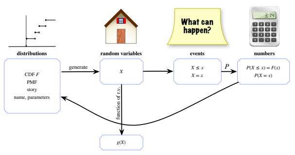
그림 3.12. 확률론의 네 기본 대상은 분포(청사진), 확률변수, 사건, 수이다. 누적분포함수 \(F\)로부터 확률변수 \(X\)를 생성할 수 있다. \(X\)에 함수를 적용하여 다른 많은 확률변수를 만들 수 있다. \(X\)의 움직임을 기술하는 사건은 여러 가지가 있다. 특히 임의의 상수 \(x\)에 대해 \(X\le x\)와 \(X=x\)인 사건이 중요하다. 모든 \(x\)에 대해 이러한 사건의 확률을 알면 누적분포함수와, 이산형인 경우 확률질량함수를 얻으므로 한 바퀴를 돌아온다. 그림 안의 영문은 distributions: 분포, random variables: 확률변수, events: 사건, numbers: 수, story: 이야기, name, parameters: 이름과 모수, generate: 생성, function of r.v.: 확률변수의 함수, What can happen?: 어떤 일이 일어날 수 있는가를 뜻한다.
3.11 R
3.11.1 R에서의 분포
이 책에서 만날 이름 붙은 분포는 모두 R에 구현되어 있다. 이 절에서는 R에서 이항분포와 초기하분포를 다루는 방법을 설명한다. 또한 일반적으로 유한한 지지집합을 갖는 임의의 이산분포에서 확률변수를 생성하는 방법도 설명한다. help(distributions)를 입력하면 내장된 분포의 편리한 목록을 볼 수 있으며, 불러올 수 있는 R 패키지를 통해 그 밖의 많은 분포도 이용할 수 있다.
일반적으로 이름 붙은 많은 이산분포에 대해 d, p, r로 시작하는 세 함수는 각각 확률질량함수, 누적분포함수, 무작위 생성을 제공한다. p로 시작하는 함수는 확률질량함수가 아니라 누적분포함수라는 점에 유의하자.
3.11.2 이항분포
이항분포에는 다음 세 R 함수가 대응한다. dbinom, pbinom, rbinom이다. 베르누이 분포에는 \(n=1\)인 이항분포 함수를 그대로 사용하면 된다.
dbinom은 이항 확률질량함수이다. 세 입력을 받는다. 첫 번째는 확률질량함수를 계산할 \(x\)의 값이고, 두 번째와 세 번째는 모수 \(n\)과 \(p\)이다. 예를 들어dbinom(3,5,0.2)는 \(X\sim\operatorname{Bin}(5,0.2)\)일 때의 확률 \(P(X=3)\)을 반환한다. 다시 말해\[\operatorname{dbinom}(3,5,0.2)=\binom53(0.2)^3(0.8)^2=0.0512.\]
pbinom은 이항 누적분포함수이다. 세 입력을 받으며, 첫 번째는 누적분포함수를 계산할 \(x\)의 값이고 두 번째와 세 번째는 모수이다.pbinom(3,5,0.2)는 \(X\sim\operatorname{Bin}(5,0.2)\)일 때의 확률 \(P(X\le3)\)이다. 따라서\[\operatorname{pbinom}(3,5,0.2)=\sum_{k=0}^{3}\binom5k(0.2)^k(0.8)^{5-k}\approx0.9933.\]
rbinom은 이항 확률변수를 생성하는 함수이다.rbinom의 첫 번째 입력은 생성하려는 확률변수의 개수이고, 두 번째와 세 번째 입력은 여전히 모수이다. 따라서 명령rbinom(7,5,0.2)는 서로 독립이고 동일하게 \(\operatorname{Bin}(5,0.2)\) 분포를 따르는 확률변수 일곱 개의 실현값을 생성한다. 이 명령을 실행했을 때 우리는 다음 결과를 얻었다.2 1 0 0 1 0 0하지만 여러분이 실행하면 아마 다른 결과를 얻게 될 것이다!
확률질량함수와 누적분포함수는 값의 벡터 전체에 대해서도 계산할 수 있다. 예를 들어 0:n이 0부터 \(n\)까지의 정수를 빠르게 나열하는 방법이라는 것을 떠올려 보자. 명령 dbinom(0:5,5,0.2)는 \(X\sim\operatorname{Bin}(5,0.2)\)일 때 \(P(X=0),P(X=1),\ldots,P(X=5)\)라는 여섯 개의 수를 반환한다.
3.11.3 초기하분포
초기하분포에도 dhyper, phyper, rhyper라는 세 함수가 있다. 예상할 수 있듯이 dhyper는 초기하 확률질량함수이고, phyper는 초기하 누적분포함수이며, rhyper는 초기하 확률변수를 생성한다. 초기하분포는 모수가 세 개이므로 이 함수들은 각각 네 개의 입력을 받는다. dhyper와 phyper에서 첫 번째 입력은 확률질량함수 또는 누적분포함수를 계산하려는 값이고, 나머지 입력들은 분포의 모수이다.
따라서 dhyper(k,w,b,n)은 \(X\sim\operatorname{HGeom}(w,b,n)\)일 때 \(P(X=k)\)를 반환하고, phyper(k,w,b,n)은 \(P(X\le k)\)를 반환한다. rhyper의 첫 번째 입력은 생성하려는 확률변수의 개수이고 나머지 입력들은 모수이다. rhyper(100,w,b,n)은 서로 독립이고 동일하게 \(\operatorname{HGeom}(w,b,n)\) 분포를 따르는 확률변수 100개를 생성한다.
3.11.4 유한한 지지집합을 갖는 이산분포
sample 명령을 사용하면 유한한 지지집합을 갖는 임의의 이산분포로부터 확률변수를 생성할 수 있다. sample 명령을 처음 소개했을 때, sample(n,k) 또는 sample(n,k,replace=TRUE) 형태로 사용해 정수 1부터 \(n\)까지에서 \(k\)번 각각 비복원추출 또는 복원추출할 수 있다고 했다. 예를 들어 서로 독립인 \(\operatorname{DUnif}(1,2,\ldots,100)\) 확률변수 다섯 개를 생성하려면 sample(100,5,replace=TRUE) 명령을 사용할 수 있다.
실제로 sample은 훨씬 다재다능하다. 값 \(x_1,\ldots,x_n\)을 각각 확률 \(p_1,\ldots,p_n\)으로 추출하려면 모든 \(x_i\)를 담은 벡터 x와 모든 \(p_i\)를 담은 벡터 p를 만든 후 sample에 입력하면 된다. 확률질량함수가 다음과 같은 i.i.d. 확률변수 \(X_1,\ldots,X_{100}\)의 실현값을 얻고자 한다고 하자.
\[ \begin{aligned} P(X_j=0)&=0.25,\\ P(X_j=1)&=0.5,\\ P(X_j=5)&=0.1,\\ P(X_j=10)&=0.15, \end{aligned} \]
그 밖의 모든 \(x\)에 대해서는 \(P(X_j=x)=0\)이다. 먼저 c 함수를 사용해 분포의 지지집합과 그에 대응하는 확률을 담은 벡터를 만든다.
x <- c(0,1,5,10)
p <- c(0.25,0.5,0.1,0.15)다음으로 sample을 사용한다. 위의 확률질량함수에서 100번 추출하는 방법은 다음과 같다.
sample(x,100,prob=p,replace=TRUE)입력은 표본을 추출할 벡터 x, 표본 크기(이 경우 100), x에서 추출할 때 사용할 확률 p(이를 생략하면 확률이 같다고 가정한다), 그리고 복원추출 여부이다.15
3.12 연습문제
ⓢ 표시가 있는 문제의 자세한 풀이는 http://stat110.net에 있다.
3.12.1 확률질량함수와 누적분포함수
- 사람들이 파티에 한 명씩 도착한다. 더 많은 사람이 오기를 기다리는 동안 사람들은 서로 생일을 비교하며 시간을 보낸다. 생일이 같은 쌍이 처음 생기기까지 필요한 사람의 수를 \(X\)라 하자. 즉 \(X\)번째 사람이 도착하기 전에는 같은 생일을 가진 두 사람이 없지만, \(X\)번째 사람이 도착하면 생일이 같은 쌍이 생긴다. \(X\)의 확률질량함수를 구하라.
- 성공 확률이 \(1/2\)인 독립적인 베르누이 시행을 적어도 한 번 성공할 때까지 한다. 수행한 시행 횟수의 확률질량함수를 구하라.
- 성공 확률이 \(1/2\)인 독립적인 베르누이 시행을 적어도 한 번 성공하고 적어도 한 번 실패할 때까지 한다. 수행한 시행 횟수의 확률질량함수를 구하라.
- 누적분포함수가 \(F\)인 확률변수를 \(X\)라 하고 \(Y=\mu+\sigma X\)라 하자. 여기서 \(\mu,\sigma\)는 실수이고 \(\sigma>0\)이다. 이때 \(Y\)를 \(X\)의 위치-척도 변환이라 하며, 5장 이후 이 개념을 여러 번 접할 것이다. \(Y\)의 누적분포함수를 \(F\)로 나타내라.
- \(n\)을 양의 정수라 하고 \(0\le x\le n\)에서 \(F(x)=\lfloor x\rfloor/n\), \(x<0\)에서 \(F(x)=0\), \(x>n\)에서 \(F(x)=1\)이라 하자. 여기서 \(\lfloor x\rfloor\)는 \(x\) 이하의 최대 정수이다. \(F\)가 누적분포함수임을 보이고 그에 대응하는 확률질량함수를 구하라.
- \(n=0,1,2,\ldots\)에 대해 \(p(n)=(1/2)^{n+1}\)이 이산확률변수의 유효한 확률질량함수임을 보여라.
- (a)의 확률질량함수를 갖는 확률변수의 누적분포함수를 구하라.
- ⓢ 벤퍼드의 법칙에 따르면 매우 다양한 실제 데이터 집합에서 첫 자릿수는 근사적으로 특정 분포를 따른다. 첫 자릿수가 1일 가능성은 약 30%, 2일 가능성은 약 18%이며, 일반적으로 \[P(D=j)=\log_{10}\left(\frac{j+1}{j}\right),\qquad j\in\{1,2,3,\ldots,9\},\] 여기서 \(D\)는 무작위로 고른 원소의 첫 자릿수이다. 이것이 유효한 확률질량함수인지 확인하라. 계산기 대신 로그의 성질을 이용하라.
- 밥이 7단계로 이루어진 비디오 게임을 한다. 1단계에서 시작하며 2단계에 도달할 확률은 \(p_1\)이다. 일반적으로 \(j\)단계에 도달했다는 조건 아래 \(j+1\)단계에 도달할 확률은 \(p_j\)이다(\(1\le j\le6\)). 밥이 도달한 가장 높은 단계를 \(X\)라 하자. \(X\)의 확률질량함수를 \(p_1,\ldots,p_6\)로 나타내라.
- 1달러짜리부터 100달러짜리까지 각각 하나씩 상품 100개가 있다. 상자도 100개가 있고 각 상자에는 상품 하나가 들어 있다. 무작위로 상자를 한 번에 하나씩 비복원추출하여 상품 5개를 얻는다. 가장 값비싼 상품의 가격에 대한 확률질량함수를 이항계수를 이용한 간단한 식으로 구하라.
- \(F_1,F_2\)를 누적분포함수라 하고 \(0<p<1\), 모든 \(x\)에 대해 \(F(x)=pF_1(x)+(1-p)F_2(x)\)라 하자.
- \(F\)가 유효한 누적분포함수의 성질을 갖는지 직접 보여라(정리 3.6.3 참조). \(F\)가 정의하는 분포를 \(F_1,F_2\)가 정의하는 분포의 혼합분포라 한다.
- 앞면이 나올 확률이 \(p\)인 동전을 던진다. 앞면이면 \(F_1\)에 따라 확률변수를 생성하고 뒷면이면 \(F_2\)에 따라 생성한다. 이렇게 얻은 확률변수의 누적분포함수가 \(F\)임을 보여라.
- 지지집합이 \(1,2,3,\ldots\)이고 \(n\)에서의 확률질량함수 값이 \(1/n\)에 비례하는 이산분포가 있는가? 힌트: 급수에 관한 사실들은 수학 부록을 참고하라.
- 지지집합이 \(1,2,3,\ldots\)이고 \(n\)에서의 확률질량함수 값이 \(1/n^2\)에 비례하는 이산분포가 있는가?
- ⓢ 가능한 값이 \(0,1,2,\ldots\)이고 누적분포함수가 \(F\)인 확률변수 \(X\)가 있다. 일부 나라에서는 누적분포함수 대신 \(G(x)=P(X<x)\)로 정의한 함수 \(G\)로 분포를 나타내기도 한다. \(F\)가 알려져 있을 때 모든 실수 \(x\)에 대해 \(G(x)\)를 구하는 방법을 보여라.
- 모든 \(x\)에 대해 \(F_X(x)\le F_Y(x)\)이고 어떤 \(x\)에서는 부등호가 엄격한 확률변수 \(X,Y\)의 예를 들어라. \(F_X,F_Y\)는 각각 \(X,Y\)의 누적분포함수이다. 제시한 예에서 두 누적분포함수를 같은 좌표축에 그리고, 두 확률질량함수를 별도의 같은 좌표축에 그려라.
- (a)에서는 첫 번째가 어디서나 두 번째 이하인 서로 다른 두 누적분포함수를 찾았다. 첫 번째가 어디서나 두 번째 이하인 서로 다른 두 확률질량함수도 찾을 수 있는가? 즉 모든 \(x\)에 대해 \(P(X=x)\le P(Y=x)\)이고 어떤 \(x\)에서는 부등호가 엄격한 이산확률변수 \(X,Y\)를 찾거나 불가능함을 보여라.
- \(X,Y,Z\)를 이산확률변수라 하자. \(Z\)가 주어졌을 때 \(X\)와 \(Y\)의 조건부분포가 같아 모든 \(a,z\)에 대해 \(P(X=a\mid Z=z)=P(Y=a\mid Z=z)\)라 하자.16 \(X,Y\)가 조건을 붙이지 않아도 같은 분포를 따름을 보여라.
- 어떤 회사의 온라인 사이트에서 프레드가 정해진 기간 동안 구매할 횟수를 \(X\)라 하자. \(k=0,1,2,\ldots\)에 대해 \(P(X=k)=e^{-\lambda}\lambda^k/k!\)이라고 가정하자. 이 분포를 모수 \(\lambda\)인 포아송 분포라 하며 뒤의 여러 장에서 자세히 다룬다.
- 무한급수를 더하지 않고 \(P(X\ge1)\)과 \(P(X\ge2)\)를 구하라.
- 회사는 사이트에서 적어도 한 번 구매한 사람만 알고 있다고 하자. 구매하려면 계정을 만들지만 한 번도 구매하지 않은 사람은 고객 데이터베이스에 나타나지 않는다. 회사가 데이터베이스에 있는 모든 사람의 구매 횟수를 계산하면 이 데이터는 적어도 한 번 구매했다는 조건 아래 구매 횟수의 조건부분포에서 추출된 값이다. \(X\ge1\)이 주어졌을 때 \(X\)의 조건부 확률질량함수를 구하라. 이 조건부분포를 절단 포아송 분포라 한다.
3.12.2 이름 붙은 분포
\(X\sim\operatorname{DUnif}(1,2,\ldots,n)\)일 때 \(X\)의 누적분포함수를 구하라.
\(X\sim\operatorname{DUnif}(C)\)이고 \(B\)가 \(C\)의 공집합이 아닌 부분집합이라 하자. \(X\in B\)가 주어졌을 때 \(X\)의 조건부분포를 구하라.
항공사가 일부 승객이 나타나지 않을 가능성이 높다고 판단하여 비행기 좌석 수보다 많은 항공권을 판매한다. 비행기 좌석은 100개이고 110명이 예약했다. 각 사람은 독립적으로 확률 0.9로 비행기에 탑승하러 나타난다. 나타난 모든 사람에게 좌석이 충분할 확률을 구하라.
ⓢ (a) 야구 월드시리즈에서는 두 팀 A와 B가 여러 경기를 치러 먼저 네 경기를 이긴 팀이 시리즈에서 승리한다. 한 경기에서 A가 이길 확률을 \(p\)라 하고 경기들이 독립이라고 가정한다. A가 시리즈에서 이길 확률은 얼마인가?
- 두 팀이 언제나 7경기를 모두 하여 다수의 경기를 이긴 팀이 시리즈에서 이기는지, 아니면 실제처럼 한 팀이 4승을 거두는 즉시 추가 경기를 중단하는지에 따라 (a)의 답이 달라지는지 명확하고 직관적으로 설명하라. 실제로는 승부가 정해지면 더 이상 경기하지 않는다.
체스 대회에서 \(n\)경기가 독립적으로 진행된다. 각 경기는 확률 0.4로 한 선수가 승리하고 확률 0.6으로 무승부가 된다. 무승부로 끝나는 경기 수의 확률질량함수와 무승부 경기를 치른 선수 수의 확률질량함수를 구하라.
복권 한 장이 당첨될 확률이 \(p\)이고 다른 복권과 독립이라고 하자. 한 도박사가 적어도 한 장이 당첨될 가능성이 세 배가 되기를 바라며 세 장을 산다.
- 세 장 중 당첨된 복권 수의 분포는 무엇인가?
- 적어도 한 장이 당첨될 확률이 \(3p-3p^2+p^3\)임을 두 가지 방법으로 보여라. 하나는 포함배제를 사용하고, 다른 하나는 원하는 사건의 여사건과 이름 붙은 분포의 확률질량함수를 사용한다.
- 한 장을 샀을 때와 비교해 적어도 한 장이 당첨될 가능성은 정확히 세 배가 되지 않지만 \(p\)가 작으면 대략 세 배가 됨을 보여라.
ⓢ \(X\sim\operatorname{Bin}(n,p)\)이고 \(X\)와 독립인 \(Y\sim\operatorname{Bin}(m,p)\)라 하자. \(X-Y\)가 이항분포를 따르지 않음을 보여라.
앞면 확률이 각각 \(p_1,p_2\)인 동전 두 개 중 하나를 같은 확률로 무작위 선택한 뒤 \(n\ge2\)번 던진다. 앞면이 나온 횟수를 \(X\)라 하자.
- \(X\)의 확률질량함수를 구하라.
- \(p_1=p_2\)이면 \(X\)의 분포는 무엇인가?
- \(p_1\ne p_2\)이면 \(X\)가 이항분포가 아닌 이유를 직관적으로 설명하라. 이 분포를 두 이항분포의 혼합분포라 한다. 설명을 위해 \(n\)이 커서 확률의 빈도주의적 해석을 적용할 수 있다고 가정해도 된다.
어느 선거에서 투표할 자격이 있는 사람이 \(n\)명이다. 투표하려면 등록해야 한다. 결정들은 독립적으로 이루어진다. 각 사람은 확률 \(p_1\)로 등록한다. 등록한 사람은 확률 \(p_2\)로 투표한다. 투표하는 사람은 확률 \(p_3\)으로 후보자 코도스에게 투표한다. 코도스가 얻은 표 수의 분포를 구하라. 확률질량함수를 완전히 간단히 하여 쓰거나 분포의 이름과 모수를 제시하라.
\(X\)를 공정한 동전을 10번 던질 때 나온 앞면의 횟수라 하자.
- 첫 두 번 모두 앞면이라는 조건 아래 \(X\)의 조건부 확률질량함수를 구하라.
- 적어도 두 번 앞면이 나왔다는 조건 아래 \(X\)의 조건부 확률질량함수를 구하라.
ⓢ 앨리스는 공정한 동전을 \(n\)번, 밥은 다른 공정한 동전을 \(n+1\)번 던져 독립인 \(X\sim\operatorname{Bin}(n,1/2)\)와 \(Y\sim\operatorname{Bin}(n+1,1/2)\)를 얻는다.
- \(P(X<Y)=P(n-X<n+1-Y)\)임을 보여라.
- \(P(X<Y)\)를 구하라. 힌트: (a)와 \(X,Y\)가 정수값을 갖는다는 사실을 이용하라.
\(X\sim\operatorname{HGeom}(w,b,n)\)이면 \(n-X\)의 분포는 무엇인가? 짧게 증명하라.
1장의 드 몽모르 짝맞추기 문제를 떠올리자. \(1\)부터 \(n\)까지 번호가 붙은 카드 \(n\)장을 늘어놓았을 때 카드 번호와 그 위치가 같으면 일치라 한다. 일치한 카드 수를 \(X\)라 하자. \(X\)는 이항분포를 따르는가? 초기하분포를 따르는가?
ⓢ 달걀 \(n\)개가 있고 각 달걀은 독립적으로 확률 \(p\)로 병아리가 부화한다. 부화한 각 병아리는 독립적으로 확률 \(r\)로 생존한다. 부화한 병아리 수의 분포와 생존한 병아리 수의 분포는 각각 무엇인가? 확률질량함수를 쓰고 가능하다면 분포 이름과 모수도 제시하라.
ⓢ 독립적인 실험 \(n\)번을 수행한다. 각 실험은 확률 \(p\)로 성공하고 확률 \(q=1-p\)로 실패한다. 성공 횟수가 주어졌을 때 실험 결과 목록으로 가능한 모든 경우가 같은 가능성을 가짐을 보여라.
어떤 회사의 직원 \(n+m\)명은 여성 \(n\)명과 남성 \(m\)명으로 이루어져 있다. 회사가 승진시킬 직원을 결정한다.
- 이 소문항에서는 \(1\le t\le n+m\)인 직원 \(t\)명을 승진시키기로 하고 크기 \(t\)인 각 직원 집합의 가능성이 같도록 무작위로 선택한다고 하자. 승진한 여성 수의 분포는 무엇인가?
- 이제 승진 인원을 미리 정하는 대신 직원마다 독립적으로 확률 \(p\)로 승진 여부를 결정한다고 하자. 승진한 여성 수, 승진하지 못한 여성 수, 승진한 전체 직원 수의 분포를 각각 구하라.
- (b)의 상황에서 정확히 \(t\)명이 승진했다는 조건 아래 승진한 여성 수의 조건부분포를 구하라.
옛날에 유명한 통계학자가 한 여성에게 차를 권했다. 그 여성은 우유를 차보다 먼저 잔에 넣었는지 나중에 넣었는지를 구별할 수 있다고 주장했다. 통계학자는 그 주장을 검증할 실험을 하기로 했다.
- 여성은 차 6잔을 받는다. 미리 3잔은 우유를 먼저, 3잔은 차를 먼저 넣었으며 순서는 완전히 무작위임을 알고 있다. 각 잔을 맛보고 우유를 먼저 넣은 3잔을 추측한다. 이 소문항에서는 여성이 두 종류의 차를 구별할 능력이 전혀 없다고 가정한다. 그녀가 고른 3잔 중 적어도 2잔이 맞을 확률을 구하라.
- 이제 차 한 잔을 받으며 우유를 먼저 넣었을 확률은 \(1/2\)이다. 여성은 우유를 먼저 넣었다고 생각하는지 말해야 한다. 실제로 우유를 먼저 넣었을 때 답이 맞을 조건부확률을 \(p_1\), 차를 먼저 넣었을 때 답이 맞을 조건부확률을 \(p_2\)라 하자. 여성이 우유를 먼저 넣었다고 주장했다. 이 정보 아래 실제로 우유를 먼저 넣었을 사후 오즈를 구하라.
에번의 역사 수업에서는 주요 용어 100개 중 10개를 무작위로 골라 기말시험에 낸다. 에번은 그 10개 중 7개를 골라 정의해야 한다. 시험 형식을 미리 알고 있으므로 에번은 주요 용어를 몇 개 공부할지 고민한다.
- 에번이 \(0\)부터 \(100\)까지의 정수 \(s\)개 용어를 공부한다고 하자. 시험에 나온 용어 중 그가 공부한 것의 수를 \(X\)라 하자. \(X\)의 분포 이름과 모수를 \(s\)로 나타내라.
- 에번이 \(s=75\)개 용어를 공부할 때 시험에 나온 10개 중 적어도 7개를 알고 있을 확률을 R이나 다른 소프트웨어로 계산하라.
책에 오타가 \(n\)개 있다. 교정자 프루와 프리다는 서로 독립적으로 책을 읽는다. 프루는 각 오타를 확률 \(p_1\)로 발견하고 확률 \(q_1=1-p_1\)로 놓치며, 오타마다 독립적이다. 프리다도 마찬가지로 각 오타를 확률 \(p_2\)로 발견하고 확률 \(q_2=1-p_2\)로 놓친다. 프루가 발견한 오타 수를 \(X_1\), 프리다가 발견한 오타 수를 \(X_2\), 둘 중 적어도 한 명이 발견한 오타 수를 \(X\)라 하자.
- \(X\)의 분포를 구하라.
- 이 소문항에서만 \(p_1=p_2\)라고 가정한다. \(X_1+X_2=t\)가 주어졌을 때 \(X_1\)의 조건부분포를 구하라.
어느 학교의 학생은 \(n\)명이고 그중 통계학 전공자는 \(X\sim\operatorname{Bin}(n,p)\)명이다. 크기 \(m\)의 단순임의표본을 뽑는다. 단순임의표본은 주어진 크기의 모든 부분집합이 같은 가능성을 갖는 비복원추출을 뜻한다.
- 전체 확률의 법칙을 이용해 표본에 포함된 통계학 전공자 수의 확률질량함수를 구하고 지지집합도 밝혀라. 답을 합의 형태로 남겨 두어도 된다. 다만 이항계수를 계승으로 나타내고 이항정리를 사용하면 대수적으로 간단히 할 수 있다.
- 표본에 포함된 통계학 전공자 수의 분포를 이야기를 이용해 증명하고 완전히 간단히 하라. 힌트: 학생들이 무작위 표본을 뽑기 전에 전공을 정하는지 후에 정하는지가 중요한가?
ⓢ 참가자 A와 B가 퀴즈 문제에 번갈아 답하며 A가 첫 번째 문제에 답한다. A는 문제에 답할 때마다 확률 \(p_1\)로 맞히고 B는 문제를 풀 때마다 확률 \(p_2\)로 맞힌다.17
- A가 \(m\)문제에 답할 때 맞힌 문제 수의 확률질량함수는 무엇인가?
- A가 \(m\)번, B가 \(n\)번 답할 때 두 사람이 맞힌 문제 수의 합의 확률질량함수는 무엇인가? 답을 합의 형태로 남겨도 된다. 이것이 언제 이항분포가 되는지 또는 되지 않는지 정확히 설명하라.
- 처음으로 정답을 맞힌 참가자가 이기며 출제할 문제 수의 미리 정해진 상한은 없다고 하자. A가 게임에서 이길 확률을 구하라.
어느 나라에서 곧 치를 선거의 유권자는 \(n\)명이며 \(n\)은 큰 짝수이다. 후보자는 통합당의 A와 분리당의 B 두 명이다. A에게 투표한 사람의 수를 \(X\)라 하자. 각 유권자는 두 후보 중 한 명을 독립적으로 같은 확률로 무작위 선택한다고 가정한다.
- 두 후보가 같은 수의 표를 얻어 선거가 무승부가 될 확률을 정확한 식으로 구하라.
- 계승을 근사하는 스털링 근사 \(n!\approx\sqrt{2\pi n}(n/e)^n\)을 이용하여 무승부 확률의 간단한 근삿값을 구하라. 답은 상수 \(c\)에 대해 \(1/\sqrt{cn}\)의 형태로 나타내고 \(c\)를 밝혀라.
ⓢ 잡음이 있는 통신로로 메시지를 보낸다. 메시지는 \(n\)개의 비트 \(x_1,x_2,\ldots,x_n\)으로 이루어진 수열이며 \(x_i\in\{0,1\}\)이다. 통신로에 잡음이 있어 각 비트가 손상되어 오류가 발생할 수 있다. 오류가 나면 0이 1이 되거나 1이 0이 된다. 오류 사건들은 독립이라고 가정한다. 개별 비트에서 오류가 발생할 확률을 \(p\)라 하자(\(0<p<1/2\)). 수신한 메시지를 \(y_1,y_2,\ldots,y_n\)이라 하자. 따라서 해당 비트에 오류가 없으면 \(y_i=x_i\), 오류가 있으면 \(y_i=1-x_i\)이다.
오류를 탐지하기 위해 \(n\)번째 비트는 패리티 검사에 사용한다. \(x_1+\cdots+x_{n-1}\)이 짝수이면 \(x_n=0\), 홀수이면 \(x_n=1\)로 정의한다. 메시지를 받으면 수신자는 \(y_n\)의 짝홀성이 \(y_1+\cdots+y_{n-1}\)의 짝홀성과 같은지 확인한다. 패리티가 맞지 않으면 적어도 한 오류가 발생했음을 알 수 있고, 그렇지 않으면 오류가 없었다고 가정한다.
- \(n=5\), \(p=0.1\)일 때 수신한 메시지에 오류가 있지만 탐지되지 않을 확률은 얼마인가?
- 일반적인 \(n,p\)에 대해 수신한 메시지에 오류가 있지만 탐지되지 않을 확률을 합의 형태로 써라.
- 많은 항의 합을 포함하지 않는 간단한 식을 구하라. (c)의 힌트: \[a=\sum_{\substack{k\text{ 짝수}\\k\ge0}}\binom nk p^k(1-p)^{n-k},\qquad b=\sum_{\substack{k\text{ 홀수}\\k\ge1}}\binom nk p^k(1-p)^{n-k}\] 라 하면 이항정리를 이용해 \(a+b\)와 \(a-b\)의 간단한 식을 구할 수 있고, 이를 이용해 \(a,b\)를 구할 수 있다.
3.12.3 확률변수의 독립
- \(P(X<Y)=1\)인 종속 확률변수 \(X,Y\)의 예를 들어라.
- \(P(X<Y)=1\)인 독립 확률변수 \(X,Y\)의 예를 들어라.
- 같은 표본공간의 이산확률변수 \(X,Y\)가 같은 분포를 따르고 지지집합이 \(\{1,2,\ldots,10\}\)이지만 사건 \(X=Y\)는 결코 발생하지 않는 예를 들어라. \(X,Y\)가 독립이면 이런 예를 만들 수 있는가?
- 이산확률변수 \(X,Y\)가 \(P(X=Y)=1\)을 만족한다고 하자. 이는 \(X,Y\)가 언제나 같은 값을 취한다는 뜻이다.18
- \(X,Y\)의 확률질량함수는 같은가?
- \(X,Y\)가 독립일 수 있는가?
- 확률변수 \(X,Y,Z\)에 대해 \(X,Y\)가 독립이고 \(Y,Z\)가 독립이면 \(X,Z\)도 독립인가? 힌트: 단순한 경우와 극단적인 경우를 생각하라.
- ⓢ \(X\)를 무작위로 고른 요일이라 하자. 월요일은 1, 화요일은 2 등으로 나타내므로 \(X\)는 \(1,2,\ldots,7\)을 같은 확률로 취한다. \(Y\)는 \(X\)의 다음 날이며 역시 1부터 7까지의 정수로 나타낸다. \(X,Y\)는 같은 분포를 따르는가? \(P(X<Y)\)는 얼마인가?
- 같은 분포를 따르면서 \(P(X<Y)\ge p\)인 확률변수 \(X,Y\)가 존재할 수 있는가? 다음 각각에 대해 가능함을 보이는 예를 들거나 불가능함을 증명하라.
- \(p=0.9\)
- \(p=0.99\)
- \(p=0.9999999999999\)
- \(p=1\)
- (a)와 같은 질문을 하되 이번에는 \(X,Y\)가 독립이라고 가정하자. 답이 달라지는가?
- 이진 숫자 \(x,y\in\{0,1\}\)에 대해 \(x=y\)이면 \(x\oplus y=0\), \(x\ne y\)이면 \(x\oplus y=1\)이라 하자. 이 연산을 배타적 논리합(흔히 XOR로 줄여 씀) 또는 2를 법으로 하는 덧셈이라고 한다.19
- \(X\sim\operatorname{Bern}(p)\), \(Y\sim\operatorname{Bern}(1/2)\)이고 서로 독립일 때 \(X\oplus Y\)의 분포는 무엇인가?
- (a)의 표기에서 \(X\oplus Y\)는 \(X\)와 독립인가? \(Y\)와 독립인가? \(p=1/2\)인 경우와 \(p\ne1/2\)인 경우를 모두 생각하라.
- \(X_1,\ldots,X_n\)이 i.i.d. \(\operatorname{Bern}(1/2)\)라 하자. \(\{1,2,\ldots,n\}\)의 공집합이 아닌 각 부분집합 \(J\)에 대하여 \[Y_J=\bigoplus_{j\in J}X_j\] 라 하자. 이 표기는 \(J\)의 원소에 대응하는 모든 \(X_j\)를 \(\oplus\)의 의미로 ‘더한다’는 뜻이다. \(x\oplus y=y\oplus x\)이고 \((x\oplus y)\oplus z=x\oplus(y\oplus z)\)이므로 순서는 중요하지 않다. \(Y_J\sim\operatorname{Bern}(1/2)\)이고 이 \(2^n-1\)개의 확률변수들이 쌍별 독립이지만 독립은 아님을 보여라. 예를 들어 독립인 공정한 동전 던지기 10번만으로 쌍별 독립인 공정한 동전 던지기 1023번을 시뮬레이션할 수 있다.
3.12.4 종합 연습
ⓢ 어떤 질병의 새 치료법이 기존 치료법보다 나은지 시험하고 있다. 기존 치료법은 환자의 50%에게 효과가 있다. 처음에는 새 치료법이 환자의 60%에게 효과가 있을 가능성이 \(2/3\), 50%에게 효과가 있을 가능성이 \(1/3\)이라고 믿는다. 예비 연구에서 무작위 환자 20명에게 새 치료법을 적용했고 그중 15명에게 효과가 있었다.
- 이 정보가 주어졌을 때 새 치료법이 기존 치료법보다 나을 확률은 얼마인가?
- 나중에 새로운 무작위 환자 20명에게 새 치료법을 적용하는 두 번째 연구를 한다. 첫 번째 연구의 결과가 주어졌을 때 새 환자 중 치료법이 효과가 있는 사람 수의 확률질량함수는 무엇인가? (a)의 답을 \(p\)라 하면 답을 \(p\)를 이용해 남겨 두어도 된다.
성공 확률이 매번 \(1/2\)인 독립 베르누이 시행을 수행한다. 이런 상황에서 중요한 질문은 시행을 몇 번 할 것인가이다. 시행 횟수가 지금까지 수집한 데이터에 의존할 수 있는 실험에서 나온 데이터를 어떻게 분석해야 하는지를 둘러싸고 통계학에서는 많은 논란이 있었다.
예를 들어 ‘실패 횟수가 성공 횟수의 두 배를 초과할 때까지 시행한 뒤 중단한다’는 규칙을 따를 수 있다면, 과정이 중단되는 경우 실패 대 성공 비율을 단순히 살펴보면 실제 이론적 비율인 1:1이 아니라 2:1을 초과한다. 이는 매우 오해를 부를 수 있는 결과이다! 그러나 실패 횟수가 성공 횟수의 두 배를 초과하는 일이 전혀 일어나지 않을 수도 있다. 이 문제에서는 그런 일이 일어날 확률을 구한다.
- 두 도박사 A와 B가 연속해서 내기한다. 각 내기에서 양쪽이 이길 확률은 각각 \(1/2\)이지만 A는 이길 때마다 2달러를 얻고 질 때마다 1달러를 잃는다. A에게 매우 유리한 게임이다! 도박사들이 돈을 빌릴 수 있으므로 실제로 영원히 도박할 수 있다고 가정한다. 정수 \(k\ge0\)마다 \(k\)달러로 시작한 A가 언젠가 0달러에 도달할 확률을 \(p_k\)라 하자. 이 이야기가 원래 문제와 어떤 관계가 있고 \(p_k\)를 구하면 원래 문제를 어떻게 풀 수 있는지 설명하라.
- \(p_k\)를 구하라. 힌트: 도박사의 파산 문제에서와 같이 \(p_k\)의 차분방정식을 세우고 풀어라. \(k\to\infty\)일 때 \(p_k\to0\)이다. 이를 증명할 필요는 없지만 A에게 매우 유리한 게임이므로 A의 재산이 무한대로 갈 것임을 생각하면 타당해야 한다. 여기서 요구하지 않는 형식적 증명은 10장의 중요한 정리인 큰 수의 법칙을 이용할 수 있다. 답은 황금비를 이용하여 깔끔하게 나타낼 수 있다.
- 원래 질문대로 독립인 \(\operatorname{Bern}(1/2)\) 시행에서 언젠가 실패 횟수가 성공 횟수의 두 배를 초과할 확률을 구하라.
복사기로 매일 \(n\)쪽을 복사한다. 종이를 넣는 용지함이 두 개 있고 사용되는 각 쪽은 두 용지함 중 하나에서 무작위로 독립적으로 나온다.20 하루가 시작되면 각 용지함에 종이 \(m\)쪽씩을 다시 채운다.
pbinom(x,n,p)를 \(\operatorname{Bin}(n,p)\) 분포의 누적분포함수를 \(x\)에서 평가한 값이라 하자. 어느 특정한 날 양쪽 용지함의 종이가 충분할 확률이 0과 1 사이에 엄격히 있을 때 그 확률을pbinom을 이용한 간단한 식으로 구하라. 확률이 0인 \(m\)과 1인 \(m\)도 밝혀라. 힌트: 이항분포는 이산형이므로 부등호가 엄격한지 주의하라.- \(n=10,100,1000,10000\) 각각에 대해 특정한 날 양쪽 용지함의 종이가 충분할 확률이 적어도 95%가 되도록 하는 가장 작은 \(m\)을 컴퓨터로 구하라. 힌트: R을 사용한다면 다음 명령이 유용할 수 있다.
g <- function(m,n) [여기에 (a)의 답]은 \(g(m,n)\)이 (a)의 답인 함수 \(g\)를 정의한다.g(1:100,100)은 벡터 \((g(1,100),\ldots,g(100,100))\)을 주고,which(v>0.95)는 벡터v에서 성분이 0.95보다 큰 위치들의 인덱스를 주며,min(w)는 벡터w의 최솟값을 준다.
옮긴이 주: 지지집합 안에서 확률이 엄격히 양수라는 부분은 지지집합의 정의에서 따른다. 확률의 비음성만으로는 엄격한 양수를 보장할 수 없다.↩︎
옮긴이 주: 앞의 원서 정의는 \(0<p<1\)로 제한하므로 \(P(A)=0\) 또는 \(1\)인 경우에는 이 표현과 충돌한다. 이 경계에서는 지시확률변수가 각각 거의 확실하게 0 또는 1이며, 베르누이 분포를 \(p=0,1\)까지 퇴화분포로 확장하면 분포 표기도 그대로 사용할 수 있다. 이 책의 이항분포 정의에도 같은 모수 제한이 있다.↩︎
옮긴이 주: 이 종속성 설명은 성공과 실패가 모두 가능한 비퇴화 상황에 관한 것이다. 예를 들어 공이 한 색뿐이면 각 결과가 상수이므로 시행들이 독립일 수 있다.↩︎
옮긴이 주: (e)의 순서별 결론을 얻으려면 각 단계에서 남은 쪽지 중 하나를 같은 확률로 뽑는 등 추출 순서에 관한 가정도 필요하다. 다섯 장의 집합만 균등하게 선택된다는 조건으로는 순서가 균등함을 보장할 수 없다.↩︎
옮긴이 주: 그림 3.8처럼 지지집합이 유한한 예에서는 계단 모양이지만, 일반적인 이산분포의 누적분포함수는 열린 평평한 구간 없이 조밀한 점들에서 도약할 수도 있다. 도약의 크기가 각 점의 확률과 같다는 주장은 그대로 성립한다.↩︎
옮긴이 주: 확률질량함수와 누적분포함수 사이의 변환에 관한 이 문맥은 이산확률변수를 다룬다. 누적분포함수는 연속확률변수를 포함한 일반적인 확률변수에도 정의된다.↩︎
옮긴이 주: 다음 예의 제곱근은 음의 실수에서 실수값이 정의되지 않지만, 해당 \(X\)는 0, 1, 4만 취하므로 합성에 문제가 없다. 이처럼 \(g\)가 \(X\)가 취하는 값에서 정의되면 충분하다. 일반적인 확률공간에서 \(g(X)\)가 확률변수임을 보장하려면 \(g\)에 보렐 가측성 등의 조건도 필요하다.↩︎
옮긴이 주: 확률질량함수로 비교하는 설명은 이산확률변수에 적용된다. 누적분포함수를 이용한 표현은 일반적인 확률변수에도 적용된다.↩︎
옮긴이 주: 원문의 합에는 \(P(X=j)=0\)인 항이 포함될 수 있으므로 이때의 조건부확률은 앞의 정의로는 정해지지 않는다. \(0<p<1\)과 \(0\le k\le n+m\)에서 합의 범위를 \(\max(0,k-m)\le j\le\min(n,k)\)로 제한하거나, 조건부확률 대신 결합확률을 써서 이를 피할 수 있다.↩︎
옮긴이 주: 앞에서 배운 사건에 대한 조건부확률의 정의를 사용하려면 \(P(Z=z)>0\)이어야 한다. 연속형 \(Z\)처럼 \(P(Z=z)=0\)인 값에 대해서는 별도의 정규 조건부분포 등으로 이 표현을 정의해야 하며, 그 경우 일반적으로 \(Z\)의 분포에 관해 거의 모든 \(z\)에서 등식을 다룬다.↩︎
옮긴이 주: 뒤의 엄격한 부등식과 종속성에는 두 상대를 만날 사전확률이 각각 양수라는 가정, 즉 \(0<P(Z=1)<1\)이 필요하다. 어느 한 상대가 확실하다면 두 경기의 결과는 오히려 독립이다.↩︎
옮긴이 주: 조건부분포를 정의하려면 \(P(X+Y=r)>0\)이어야 한다. 예를 들어 \(0<p<1\)이고 정수 \(0\le r\le n+m\)이면 이 조건이 성립한다. 질병에 걸린 사람의 집합 자체가 균등하다는 위의 엘크 비유에는 각 개인의 질병 여부를 독립이고 동일한 확률의 베르누이 시행으로 모형화하는 가정이 사용된다. 집계된 \(X,Y\)의 분포와 독립성만으로 개인들의 집합이 균등하다고 결론낼 수는 없다.↩︎
옮긴이 주: 이 극한에서는 표본 크기 \(n\)을 고정한다. 증명의 계승 표현은 충분히 큰 \(w,b\)를 사용하는 경우를 나타내며, \(k=0\) 또는 \(k=n\)에서 항이 없는 곱은 1로 해석한다. \(p=0\) 또는 \(1\)인 경계는 각각 상수 확률변수를 주는 별도의 퇴화 경우로 볼 수 있다.↩︎
옮긴이 주: 여기서 ‘증가’는 엄격히 증가한다는 뜻이 아니라 비감소한다는 뜻이다.↩︎
옮긴이 주:
x가 길이 1인 양의 숫자라면sample(x, ...)은 그 값 하나가 아니라1:x에서 추출하는 R의 특수 규칙이 적용된다. 이 경우sample.int(length(x), ..., replace=TRUE, prob=p)로 위치를 추출한 후x[...]로 값에 대응시키면 이러한 모호함을 피할 수 있다.↩︎옮긴이 주: 앞에서 정의한 조건부확률을 사용할 때 \(z\)는 \(P(Z=z)>0\)인 값으로 제한한다.↩︎
옮긴이 주: 이어지는 분포와 확률을 결정하려면 각 답변의 정오가 서로 독립이라는 가정이 필요하다.↩︎
옮긴이 주: 엄밀히는 \(X,Y\)가 거의 확실하게 같다는 뜻이다. 확률 0인 표본점에서는 값이 다를 수 있다.↩︎
옮긴이 주: (c)의 독립이 아니라는 결론에는 \(n\ge2\)가 필요하다. \(n=1\)이면 확률변수가 하나뿐이므로 독립이다.↩︎
옮긴이 주: 용지함을 선택할 확률이 각각 \(1/2\)인 균등 선택을 가정해야 한다. 단순히 ‘무작위’라는 말만으로는 확률이 지정되지 않는다.↩︎